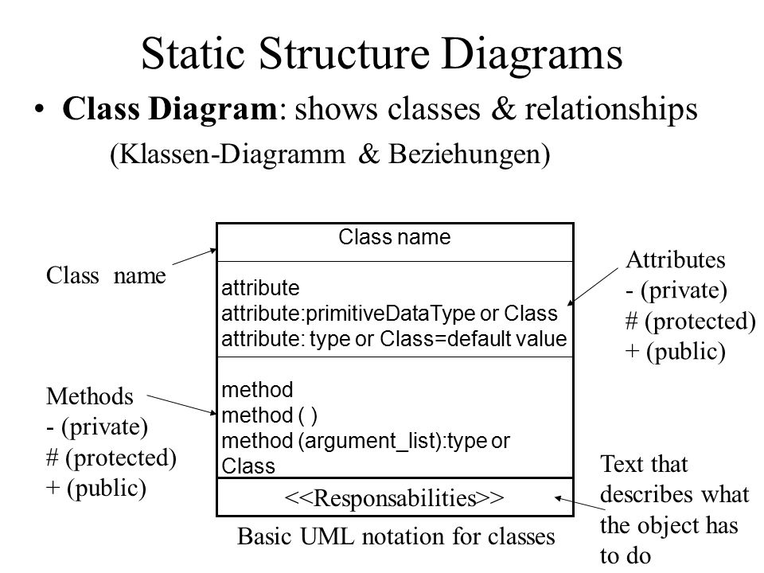

Desenvolupament d'Aplicacions Web: POO, Separació de Lògica i Presentació, Gestió d'Errors i Proves¶
Duració i criteris d'avaluació
Duració estimada: 20 hores
| Resultat d'aprenentatge | Criteris d'avaluació |
|---|---|
| 5. Desenvolupa aplicacions Web identificant i aplicant mecanismes per a separar el codi de presentació de la lògica de negoci. | a) S'han identificat els avantatges de separar la lògica de negoci dels aspectes de presentació de l'aplicació. b) S'han analitzat tecnologies i mecanismes que permeten realitzar aquesta separació i les seues característiques principals. c) S'han utilitzat objectes i controls en el servidor per a generar l'aspecte visual de l'aplicació Web en el client. d) S’han utilitzat formularis generats de forma dinàmica per a respondre als esdeveniments de l'aplicació Web. e) S'han identificat i aplicat els paràmetres relatius a la configuració de l'aplicació Web. f) S'han escrit aplicacions Web amb manteniment d'estat i separació de la lògica de negoci. g) S'han aplicat els principis de la programació orientada a objectes. g) S'ha provat i documentat el codi. |
1. Concepte de classes i Objectes¶
PHP segueix un paradigma de programació orientada a objectes (POO) basada en classes.
Un classe és un plantilla que defineix les propietats i mètodes per a poder crear objectes. D'aquest manera, un objecte és una instància d'una classe.
Tant les propietats com els mètodes es defineixen amb una visibilitat (qui pot accedir)
- Privat -
private: Només pot accedir la pròpia classe. - Protegit -
protected: Només pot accedir la pròpia classe o els seus descendents. - Público -
public: Pot accedir qualsevol altra classe.
Per a declarar una classe, s'utilitza la paraula clau class seguit del nom de la classe. Per a instanciar un objecte a partir de la classe, s'utilitza new:
<?php
class NomClase {
// propiedades
// y métodos
}
$ob = new NomClase();
Classes amb majúscula
Totes les classes comencen per lletra majúscula.
Quan un projecte creix, és normal modelar les classes mitjançant UML (recordeu Entorns de Desenvolupament?). La classes es representen mitjançant un quadrat, separant el nom, de les propietats i els mètodes:

Una vegada que hem creat un objecte, s'utilitza l'operador -> per a accedir a una propietat o un mètode:
$objeto->propiedad;
$objeto->método(parámetros);
Si des de dins de la classe, volem accedir a una propietat o mètode de la mateixa classe, utilitzarem la referència $this;
$this->propiedad;
$this->método(parámetros);
Així doncs, com a exemple, codificaríem una persona en el fitxer Persona.php com:
<?php
class Persona {
private string $nombre;
public function setNombre(string $nom) {
$this->nombre=$nom;
}
public function imprimir(){
echo $this->nombre;
echo '<br>';
}
}
$bruno = new Persona(); // creamos un objeto
$bruno->setNombre("Bruno Díaz");
$bruno->imprimir();
Encara que es poden declarar diverses classes en el mateix arxiu, és una mala pràctica. Així doncs, cada fitxer contedrá una sola classe, i es nomenarà amb el nom de la classe.
2. Principis de la POO¶
Encapsulació¶
Les propietats es defineixen privades o protegides (si volem que les classes heretades puguen accedir).
Per a cada propietat, s'afigen mètodes públics (getter/setter):
public setPropiedad(tipo $param)
public getPropiedad() : tipo
Les constants es defineixen públiques perquè siguen accessibles per tots els recursos.
<?php
class MayorMenor {
private int $mayor;
private int $menor;
public function setMayor(int $may) {
$this->mayor = $may;
}
public function setMenor(int $men) {
$this->menor = $men;
}
public function getMayor() : int {
return $this->mayor;
}
public function getMenor() : int {
return $this->menor;
}
}
Rebent i enviant objectes¶
És recomanable indicar-ho en la mena de paràmetres. Si l'objecte pot retornar nuls es posa ? davant del nom de la classe.
Objectes per referència
Els objectes que s'envien i reben com a paràmetres sempre es passen per referència.
<?php
function maymen(array $numeros) : ?MayorMenor {
$a = max($numeros);
$b = min($numeros);
$result = new MayorMenor();
$result->setMayor($a);
$result->setMenor($b);
return $result;
}
$resultado = maymen([1,76,9,388,41,39,25,97,22]);
echo "<br>Mayor: ".$resultado->getMayor();
echo "<br>Menor: ".$resultado->getMenor();
Constructor¶
El constructor dels objectes es defineix mitjançant el mètode màgic __construct.
Pot o no tindre paràmetres, però només pot haver-hi un únic constructor.
<?php
class Persona {
private string $nombre;
public function __construct(string $nom) {
$this->nombre = $nom;
}
public function imprimir(){
echo $this->nombre;
echo '<br>';
}
}
$bruno = new Persona("Bruno Díaz");
$bruno->imprimir();
Constructors en PHP 8¶
Una de les grans novetats que ofereix PHP 8 és la simplificació dels constructors amb paràmetres, la qual cosa es coneix com a promoció de les propietats del constructor*.
Per a això, en comptes d'haver de declarar les propietats com a privades o protegides, i després dins del constructor haver d'assignar els paràmetres a estàs propietats, el propi constructor promociona les propietats.
Vegem-ho millor amb un exemple. Imaginem una classe Punt on vulguem emmagatzemar les seues coordenades:
<?php
class Punto {
protected float $x;
protected float $y;
protected float $z;
public function __construct(
float $x = 0.0,
float $y = 0.0,
float $z = 0.0
) {
$this->x = $x;
$this->y = $y;
$this->z = $z;
}
}
En PHP 8, quedaria de la següent manera (molt més curt, la qual cosa facilita la seua llegibilitat):
<?php
class Punto {
public function __construct(
protected float $x = 0.0,
protected float $y = 0.0,
protected float $z = 0.0,
) {}
}
L'ordre importa
A l'hora de codificar l'ordre dels elements ha de ser:
<?php
declare(strict_types=1);
class NombreClase {
// propiedades
// constructor
// getters - setters
// resto de métodos
}
?>
Classes estàtiques¶
Són aquelles que tenen propietats i/o mètodes estàtics (també es coneixen com de classe, perquè el seu valor es comparteix entre totes les instàncies de la mateixa classe).
Es declaren amb static i es referencien amb ::.
- Si volem accedir a un mètode estàtic, s'anteposa el nom de la classe:
Producte::nuevoProducto(). - Si des d'un mètode volem accedir a una propietat estàtica de la mateixa classe, s'utilitza la referència
self:self::$numProductos
<?php
class Producto {
const IVA = 0.23;
private static $numProductos = 0;
public static function nuevoProducto() {
self::$numProductos++;
}
}
Producto::nuevoProducto();
$impuesto = Producto::IVA;
També podem tindre classes normals que tinguen alguna propietat estàtica:
<?php
class Producto {
const IVA = 0.23;
private static $numProductos = 0;
private $codigo;
public function __construct(string $cod) {
self::$numProductos++;
$this->codigo = $cod;
}
public function mostrarResumen() : string {
return "El producto ".$this->codigo." es el número ".self::$numProductos;
}
}
$prod1 = new Producto("PS5");
$prod2 = new Producto("XBOX Series X");
$prod3 = new Producto("Nintendo Switch");
echo $prod3->mostrarResumen();
Introspecció¶
En treballar amb classes i objectes, existeixen un conjunt de funcions ja definides pel llenguatge que permeten obtindre informació sobre els objectes:
instanceof: permet comprovar si un objecte és d'una determinada classeget_class: retorna el nom de la classeget_declared_class: retorna un array amb els noms de les classes definidesclass_àlies: crea un àliesclass_exists/method_exists/property_exists:truesi la classe / mètode / propietat està definidaget_class_methods/get_class_vars/get_object_vars: Retorna un array amb els noms dels mètodes / propietats d'una classe / propietats d'un objecte que són accessibles des d'on es fa la crida.
Un exemple d'aquestes funcions pot ser el següent:
<?php
$p = new Producto("PS5");
if ($p instanceof Producto) {
echo "Es un producto";
echo "La clase es ".get_class($p);
class_alias("Producto", "Articulo");
$c = new Articulo("Nintendo Switch");
echo "Un articulo es un ".get_class($c);
print_r(get_class_methods("Producto"));
print_r(get_class_vars("Producto"));
print_r(get_object_vars($p));
if (method_exists($p, "mostrarResumen")) {
$p->mostrarResumen();
}
}
Clonat
En assignar dos objectes no es copien, es crea una nova referència. Si volem una còpia, cal clonar-ho mitjançant el mètode clone(object) : object
Si volem modificar el clonat per defecte, cal definir el mètode màgic __clone() que es dirà després de copiar totes les propietats.
Més informació en https://www.php.net/manual/es/language.oop5.cloning.php
Herència¶
PHP suporta herència simple, de manera que una classe només pot heretar d'una altra, no de dues classes alhora. Per a això s'utilitza la paraula clau extends. Si volem que la classe A hereta de la classe B farem:
class A extends B
El fill hereta els atributs i mètodes públics i protegits.
Cada classe en un arxiu
Com ja hem comentat, hauríem de col·locar cada classe en un arxiu diferent per a posteriorment utilitzar-lo mitjançant include. En els següent exemple els hem col·locats junt per a facilitar la seua llegibilitat.
Per exemple, tenim una classe Producte i una Tv que hereta de Producte:
<?php
class Producto {
public $codigo;
public $nombre;
public $nombreCorto;
public $PVP;
public function mostrarResumen() {
echo "<p>Prod:".$this->codigo."</p>";
}
}
class Tv extends Producto {
public $pulgadas;
public $tecnologia;
}
Podemos utilizar las siguientes funciones para averiguar si hay relación entre dos clases:
get_parent_class(object): stringis_subclass_of(object, string): bool
<?php
$t = new Tv();
$t->codigo = 33;
if ($t instanceof Producto) {
echo $t->mostrarResumen();
}
$padre = get_parent_class($t);
echo "<br>La clase padre es: " . $padre;
$objetoPadre = new $padre;
echo $objetoPadre->mostrarResumen();
if (is_subclass_of($t, 'Producto')) {
echo "<br>Soy un hijo de Producto";
}
Polimorfisme¶
Podem crear mètodes en els fills amb el mateix nom que el pare, canviant el seu comportament.
Per a invocar als mètodes del pare -> parent::nombreMetodo()
<?php
class Tv extends Producto {
public $pulgadas;
public $tecnologia;
public function mostrarResumen() {
parent::mostrarResumen();
echo "<p>TV ".$this->tecnologia." de ".$this->pulgadas."</p>";
}
}
Constructor en fills¶
En els fills no es crea cap constructor de manera automàtica. Pel que si no n'hi ha, s'invoca automàticament al del pare. En canvi, si el definim en el fill, hem d'invocar al del pare de manera explícita.
<?php
class Producto {
public string $codigo;
public function __construct(string $codigo) {
$this->codigo = $codigo;
}
public function mostrarResumen() {
echo "<p>Prod:".$this->codigo."</p>";
}
}
class Tv extends Producto {
public $pulgadas;
public $tecnologia;
public function __construct(string $codigo, int $pulgadas, string $tecnologia) {
parent::__construct($codigo);
$this->pulgadas = $pulgadas;
$this->tecnologia = $tecnologia;
}
public function mostrarResumen() {
parent::mostrarResumen();
echo "<p>TV ".$this->tecnologia." de ".$this->pulgadas."</p>";
}
}
<?php
class Producto {
public function __construct(private string $codigo) { }
public function mostrarResumen() {
echo "<p>Prod:".$this->codigo."</p>";
}
}
class Tv extends Producto {
public function __construct(
string $codigo,
private int $pulgadas,
private string $tecnologia)
{
parent::__construct($codigo);
}
public function mostrarResumen() {
parent::mostrarResumen();
echo "<p>TV ".$this->tecnologia." de ".$this->pulgadas."</p>";
}
}
Abstracció¶
Les classes abstractes obliguen a heretar d'una classe, ja que no es permet la seua instanciación. Es defineix mitjançant abstract class NombreClase {.
Una classe abstracta pot contindre propietats i mètodes no-abstractes, i/o mètodes abstractes.
<?php
// Clase abstracta
abstract class Producto {
private $codigo;
public function getCodigo() : string {
return $this->codigo;
}
// Método abstracto
abstract public function mostrarResumen();
}
Quan una classe hereta d'una classe abstracta, obligatòriament ha d'implementar els mètodes que té el pare marcats com a abstractes.
<?php
class Tv extends Producto {
public $pulgadas;
public $tecnologia;
public function mostrarResumen() { //obligado a implementarlo
echo "<p>Código ".$this->getCodigo()."</p>";
echo "<p>TV ".$this->tecnologia." de ".$this->pulgadas."</p>";
}
}
$t = new Tv();
echo $t->getCodigo();
Classes finals¶
Són classes oposades a abstractes, ja que eviten que es puga heretar una classe o mètode per a sobreescriure-ho.
<?php
class Producto {
private $codigo;
public function getCodigo() : string {
return $this->codigo;
}
final public function mostrarResumen() : string {
return "Producto ".$this->codigo;
}
}
// No podremos heredar de Microondas
final class Microondas extends Producto {
private $potencia;
public function getPotencia() : int {
return $this->potencia;
}
// No podemos implementar mostrarResumen()
}
Interfícies¶
Permet definir un contracte amb les signatures dels mètodes a complir. Així doncs, només conté declaracions de funcions i totes han de ser públiques.
Es declaren amb la paraula clau interface i després les classes que complisquen el contracte el realitzen mitjançant la paraula clau implements.
<?php
interface Nombreable {
// declaración de funciones
}
class NombreClase implements NombreInterfaz {
// código de la clase
Es permet l'herència d'interfícies. A més, una classe pot implementar diverses interfícies (en aquest cas, sí que suporta l'herència múltiple, però només d'interfícies).
<?php
interface Mostrable {
public function mostrarResumen() : string;
}
interface MostrableTodo extends Mostrable {
public function mostrarTodo() : string;
}
interface Facturable {
public function generarFactura() : string;
}
class Producto implements MostrableTodo, Facturable {
// Implementaciones de los métodos
// Obligatoriamente deberá implementar public function mostrarResumen, mostrarTodo y generarFactura
}
Mètodes encadenats¶
Segueix el plantejament de la programació funcional, i també es coneix com method chaining. Planteja que sobre un objecte es realitzen diverses crides.
<?php
$p1 = new Libro();
$p1->setNombre("Harry Potter");
$p1->setAutor("JK Rowling");
echo $p1;
// Method chaining
$p2 = new Libro();
$p2->setNombre("Patria")->setAutor("Aramburu");
echo $p2;
Per a facilitar-ho, modificarem tots els seus mètodes mutants (que modifiquen dades, setters*, ...) perquè retornen una referència a $this:
<?php
class Libro {
private string $nombre;
private string $autor;
public function getNombre() : string {
return $this->nombre;
}
public function setNombre(string $nombre) : Libro {
$this->nombre = $nombre;
return $this;
}
public function getAutor() : string {
return $this->autor;
}
public function setAutor(string $autor) : Libro {
$this->autor = $autor;
return $this;
}
public function __toString() : string {
return $this->nombre." de ".$this->autor;
}
}
Mètodes màgics¶
Totes les classes PHP ofereixen un conjunt de mètodes, també coneguts com magic methods que es poden sobreescriure per a substituir el seu comportament. Alguns d'ells ja els hem utilitzats.
Davant qualsevol dubte, és convenient consultar la documentació oficial.
Els més destacables són:
__construct()__destruct()→ s'invoca en perdre la referència. S'utilitza per a tancar una connexió a la BD, tancar un fitxer, ...__toString()→ representació de l'objecte com a cadena. És a dir, quan femecho $objectes'executa automàticament aquest mètode.__get(propietat),__set(propietat, valor)→ Permetria accedir a les propietat privades, encara que sempre és més llegible/mantenible codificar els getter/setter.__isset(propietat),__unset(propietat)→ Permet esbrinar o llevar el valor a una propietat.__sleep(),__wakeup()→ S'executen en recuperar (unserialize^) o emmagatzemar un objecte que se serialitza (serialize), i s'utilitzen per a permet definir quines propietats se serialitzen.__call(),__callStatic()→ S'executen en cridar a un mètode que no és públic. Permeten sobrecarreguen mètodes.
3. Espai de noms¶
Des de PHP 5.3 i també coneguts com Namespaces, permeten organitzar les classes/interfícies, funcions i/o constants de manera similar als paquets a Java.
Recomanació
Un només namespace per arxiu i crear una estructura de carpetes respectant els nivells/subnivells (igual que es fa a Java)
Es declaren en la primera línia mitjançant la paraula clau namespace seguida del nom de l'espai de noms assignat (cada subnivell se separa amb la barra invertida \):
Per exemple, per a col·locar la classe Producte dins del namespace Dwes\Exemples ho faríem així:
<?php
namespace Dwes\Exemples;
const IVA = 0.21;
class Producte {
public $nombre;
public function muestra() : void {
echo"<p>Prod:" . $this->nombre . "</p>";
}
}
Accés¶
Per a referenciar a un recurs que conté un namespace, primer hem de tindre'l disponible fent ús de include o require. Si el recurs està en el mateix namespace, es realitza un accés directe (es coneix com a accés sense qualificar).
Realment hi ha tres tipus d'accés:
- sense qualificar:
recurs - qualificat:
rutaRelativa\recurs→ no fa falta posar el namespace complet - totalment qualificat:
\rutaAbsoluta\recurs
<?php
namespace Dwes\Ejemplos;
include_once("Producto.php");
echo IVA; // sin cualificar
echo Utilidades\IVA; // acceso cualificado. Daría error, no existe \Dwes\Ejemplos\Utilidades\IVA
echo \Dwes\Ejemplos\IVA; // totalmente cualificado
$p1 = new Producto(); // lo busca en el mismo namespace y encuentra \Dwes\Ejemplos\Producto
$p2 = new Model\Producto(); // daría error, no existe el namespace Model. Está buscando \Dwes\Ejemplos\Model\Producto
$p3 = new \Dwes\Ejemplos\Producto(); // \Dwes\Ejemplos\Producto
Accés¶
Per a evitar la referència qualificada podem declarar l'ús mitjançant use (similar a fer import a Java). Es fa en la capçalera, després del namespace:
Els tipus Posibles són:
use const nombreCualificadoConstanteuse function nombreCualificadoFuncionuse nombreCualificadoClaseuse nombreCualificadoClase as NuevoNombre// per a canviar de nom elements
Per exemple, si volem utilitzar la classe \Dwes\Exemples\Producte des d'un recurs que es troba en l'arrel, per exemple en inici.php, faríem:
<?php
include_once("Dwes\Exemples\Producte.php");
use const Dwes\Exemples\IVA;
use \Dwes\Exemples\Producte;
echo IVA;
$p1 = new Producte();
To use or not to use
En resum, use permet accedir sense qualificar a recursos que estan en un altre namespace. Si estem en el mateix espai de nom, no necessitem use.
Organització¶
Tot projecte, conforme creix, necessita organitzar el seu codi font. Es planteja una organització en la qual els arxius que interactuan amb el navegador es col·loquen en l'arrel, i les classes que definim van dins d'un namespace (i dins de la seua pròpia carpeta src o app).

Organització, includes i usos
- Col·locarem cada recurs en un fitxer a part.
- En la primera línia indicarem la seua namespace (si no està en l'arrel).
- Si utilitzem altres recursos, farem un
include_onced'aqueixos recursos (classes, interfícies, etc...). - Cada recurs ha d'incloure tots els altres recursos que referencie: la classe de la qual hereta, interfícies que implementa, classes utilitzades/rebudes com a paràmetres, etc...
- Si els recursos estan en un espai de noms diferent al que estem, emprarem
useamb la ruta completa per a després utilitzar referències sense qualificar.
Autoload¶
No és tediós haver de fer el include de les classes? El autoload ve al rescat.
Així doncs, permet carregar les classes (no les constants ni les funcions) que s'utilitzaran i evitar haver de fer el include_once de cadascuna d'elles. Per a això, es pot utilitzar el composer.
4. Composer¶
Eina per excel·lència en PHP per a la gestió de llibreries i dependències, de manera que instal·la i les actualitza assegurant que tot l'equip de desenvolupament té el mateix entorn i versions. A més, ofereix autoloading del nostre codi, de manera que no hàgem de fer-lo nosaltres "a mà".
Està escrit en PHP, i podeu consultar tota la seua documentació en https://getcomposer.org/.
Utilitza Packagist com a repositori de llibreries.
Funcionalment, és similar a Maven (Java) / npm (JS).
Instal·lació¶
Si estem usant XAMPP, hem d'instal·lar Composer en el propi sistema operatiu. Es recomana seguir les instruccions oficials segons el sistema operatiu a emprar.
En canvi, si usem Docker, necessitem modificar la configuració del nostre contenidor. En el nostre cas, hem decidit modificar l'arxiu Dockerfile i afegir el següent comando:
COPY --from=composer:2.0 /usr/bin/composer /usr/local/bin/composer
És important que dins del contenidor comprovem que tenim la v2:
composer -V
Primers passos¶
Quan creem un projecte per primera vegada, hem d'inicialitzar el repositori. Per a això, executarem el comando composer init on:
- Configurem el nom del paquet, descripció, autor (nom
), tipus de paquet (project), etc... - Definim les dependències del projecte (
require) i les de desenvolupament (require-dev) de manera interactiva. - En les de desenvolupament s'indica aquelles que no s'instal·laran a l'entorn de producció, per exemple, les llibreries de proves.
Després de la seua configuració, es crearà automàticament l'arxiu composer.json amb les dades introduïdes i descàrrega les llibreries en la carpeta vendor. La instal·lació de les llibreries sempre es realitza de manera local per a cada projecte.
{
"name": "dwes/log",
"description": "Pruebas con Monolog",
"type": "project",
"require": {
"monolog/monolog": "^2.1"
},
"license": "MIT",
"authors": [
{
"name": "Aitor Medrano",
"email": "a.medrano@edu.gva.es"
}
]
}
A l'hora d'indicar cada llibreria introduirem:
- el nom de la llibreria, composta tant pel creador o "vendor", com pel nom del projecte. Exemples:
monolog/monologolaravel/installer. -
la versió de cada llibreria. Tenim diverses opcions per a indicar-la:
- Directament: 1.4.2
- Amb comodins: 1.
- A partir de: >= 2.0.3
- Sense trencament de canvis: ^1.3.2 // >=1.3.2 <2.0.0
Actualitzar llibreries¶
Podem definir les dependències via l'arxiu composer.json o mitjançant comandos amb el format composer require vendor/package:version. Per exemple, si volem afegir phpUnit com a llibreria de desenvolupament, farem:
composer require phpunit/phpunit –dev
Després d'afegir noves llibreries, hem d'actualitzar el nostre projecte:
composer update
Si creem l'arxiu composer.json nosaltres directament sense inicialitzar el repositori, hem d'instal·lar les dependències:
composer install
En fer aquest pas (tant instal·lar com actualitzar), com ja hem comentat, es descarreguen les llibreries en dins de la carpeta vendor. És molt important afegir aquesta carpeta a l'arxiu .gitignore per a no pujar-les a GitHub.
A més es crea l'arxiu composer.lock, que emmagatzema la versió exacta que s'ha instal·lat de cada llibreria (aquest arxiu no es toca).
autoload.php¶
Composer crea de manera automàtica en vendor/autoload.php el codi per a incloure de manera automàtica totes les llibreries que tinguem configurades en composer.json.
Per a utilitzar-ho, en la capçalera del nostre arxius posarem:
<?php
require 'vendor/autoload.php';
En el nostre cas, de moment només el podrem en els arxius on provem les classes
Si volem que Composer també s'encarregue de carregar de manera automàtica les nostres classes de domini, dins de l'arxiu composer.json, definirem la propietat autoload:
"autoload": {
"psr-4": {"Dwes\\": "app/Dwes"}
},
Posteriorment, hem de tornar a generar el autoload de Composer mitjançant l'opció dump-autoload (o du):
composer dump-autoload
5. Logger amb Monolog¶
Provarem Composer afegint la llibreria de Monolog al nostre projecte. Es tracta d'un llibreria per a la gestió de logs de les nostres aplicacions, suportant diferents nivells (info, warning, etc...), eixides (fitxers, sockets, BBDD, Web Services, email, etc) i formats (text pla, HTML, JSON, etc...).
Per a això, inclourem la llibreria en el nostre projecte amb:
composer require monolog/monolog
Monolog 2 requereix almenys PHP 7.2, compleix amb el estandar de logging PSR-3, i és la llibreria emprada per Laravel i Symfony per a la gestió de logs.
Quan utilitzar un log
- Seguir les acciones/moviments dels usuaris
- Registrar les transaccions
- Rastrejar els errors d'usuari
- Fallades/avisos a nivell de sistema
- Interpretar i col·leccionar dades per a posterior investigació de patrons
Nivells¶
A continuació vam mostrar els diferents nivells de menys a més restrictiu:
* debug -100: Informació detallada amb propòsits de debug. No usar en entorns de producció.
* info - 200: Esdeveniments interessants com l'inici de sessió d'usuaris.
* notice - 250: Esdeveniments normals però significatius.
* warning - 300: Ocurrències excepcionals que no arriben a ser error.
* error - 400: Errors d'execució que permeten continuar amb l'execució de l'aplicació però que han de ser monitorats.
* critical - 500: Situacions importants on es generen excepcions no esperades o no hi ha disponible un component.
* alert - 550: S'han de prendre mesures immediatament.
Caiguda completa de la web, base de dades no disponible, etc... A més, se solen enviar missatges per email.
* emergency - 600: És l'error més greu i indica que tot el sistema està inutilitzable.
Hola Monolog¶
Per exemple, en l'arxiu pruebaLog.php que col·locaríem en l'arrel, primer incloem el autoload, importem els classes a utilitzar per a finalment usar els mètodes de Monolog:
<?php
include __DIR__ ."/vendor/autoload.php";
use Monolog\Level;
use Monolog\Logger;
use Monolog\Handler\StreamHandler;
$log = new Logger("MiLogger");
$log->pushHandler(new StreamHandler("logs/milog.log", Level::Debug));
$log->debug("Esto es un mensaje de DEBUG");
$log->info("Esto es un mensaje de INFO");
$log->warning("Esto es un mensaje de WARNING");
$log->error("Esto es un mensaje de ERROR");
$log->critical("Esto es un mensaje de CRITICAL");
$log->alert("Esto es un mensaje de ALERT");
En tots els mètodes de registre de missatges (debug, info, ...), a més del propi missatge, li podem passar informació com el contingut d'alguna variable, usuari de l'aplicació, etc.. com a segon paràmetre dins d'un array, el qual es coneix com array de contexte.
És convenient fer-ho mitjançant un array associatiu per a facilitar la lectura del log.
<?php
$log->warning("Producto no encontrado", [$producto]);
$log->warning("Producto no encontrado", ["datos" => $producto]);
Funcionament¶
Cada instància Logger té un nom de canal i una pila de manejadores (handler).
Cada missatge que manem al log travessa la pila de manejadores, i cadascun decideix si ha de registrar la informació, i si es dona el cas, finalitzar la propagació.
Per exemple, un StreamHandler en el fons de la pila que ho escriga tot en disc, i en el topall afig un MailHandler que envie un mail només quan hi haja un error.
Els manejadores més utilitzats són:
StreamHandler(ruta, nivel)RotatingFileHandler(ruta, maxFiles, nivel)NativeMailerHandler(para, asunto, desde, nivel)FirePHPHandler(nivel)
Per exemple: Si volem que els missatges de l'aplicació isquen pel log del servidor,
en el nostre cas l'arxiu error.log de Apatxe utilitzarem com a ruta l'eixida d'error:
<?php
// error.log
$log->pushHandler(new StreamHandler("php://stderr", Level::Debug));
FirePHP
Per exemple, mitjançant FirePHPHandler, podem utilitzar FirePHP, la qual és una eina per a fer debug en la consola de Firefox.
Després d'instal·lar l'extensió en Firefox, habilitar les opcions i configurar el Handler*, podem veure els missatges acolorits amb les seues dades:
<?php
$log = new Logger("MiFirePHPLogger");
$log->pushHandler(new FirePHPHandler(Level::INFO));
$datos = ["real" => "Bruce Wayne", "personaje" => "Batman"];
$log->debug("Esto es un mensaje de DEBUG", $datos);
$log->info("Esto es un mensaje de INFO", $datos);
$log->warning("Esto es un mensaje de WARNING", $datos);
// ...

Manejadors¶
Si no s'indica cap, se li assigna un per defecte. L'últim manejador inserit serà el primer a executar-se. Després es van executant conforme a la pila.
Processadors¶
Els processadors permeten afegir informació als missatges.
Per a això, s'apilen després de cada manejador mitjançant el mètode pushProcessor($processador).
Alguns processadors coneguts són IntrospectionProcessor (mostren la línia, fitxer, classe i metodo des del qual s'invoca el log), WebProcessor (afig la URI, mètode i IP) o GitProcessor (afig la branca i el commit).
<?php
$log = new Logger("MiLogger");
$log->pushHandler(new RotatingFileHandler("logs/milog.log", 0, Level::DEBUG));
$log->pushProcessor(new IntrospectionProcessor());
$log->pushHandler(new StreamHandler("php://stderr", Level::WARNING));
// no usa Introspection pq lo hemos apilado después, le asigno otro
$log->pushProcessor(new WebProcessor());
[2020-11-26T13:35:31.076138+01:00] MiLogger.DEBUG: Esto es un mensaje de DEBUG [] {"file":"C:\\xampp\\htdocs\\log\\procesador.php","line":12,"class":null,"function":null}
[2020-11-26T13:35:31.078344+01:00] MiLogger.INFO: Esto es un mensaje de INFO [] {"file":"C:\\xampp\\htdocs\\log\\procesador.php","line":13,"class":null,"function":null}
Formatadors¶
S'associen als manejadores amb setFormatter. Els formateadores més utilitzats són LineFormatter, HtmlFormatter o JsonFormatter.
<?php
$log = new Logger("MiLogger");
$rfh = new RotatingFileHandler("logs/milog.log", Level::Debug);
$rfh->setFormatter(new JsonFormatter());
$log->pushHandler($rfh);
{"message":"Esto es un mensaje de DEBUG","context":{},"level":100,"level_name":"DEBUG","channel":"MiLogger","datetime":"2020-11-27T15:36:52.747211+01:00","extra":{}}
{"message":"Esto es un mensaje de INFO","context":{},"level":200,"level_name":"INFO","channel":"MiLogger","datetime":"2020-11-27T15:36:52.747538+01:00","extra":{}}
Més informació
Més informació sobre manejadores, formateadores i processadors en https://github.com/Seldaek/monolog/blob/master/doc/02-handlers-formatters-processors.md
6. Generació de PDF amb DOMPDF¶
Amb PHP podem manejar tot tipus d'arxius com ja hem vist però, què passa si volem generar fitxers PDF amb dades tretes d'una base de dades?

Gràcies a una classe escrita en PHP, podem generar arxius PDF sense necessitat d'instal·lar llibreries addicionals en el nostre servidor. Però anem a utilitzar una llibreria que permet transformar codi html en pdf.
DOMPDF¶
Afegirem la llibreria de DOMPDF al nostre projecte. Per a això, inclourem la llibreria en el nostre projecte amb:
composer require dompdf/dompdf
Pas 1: Incloent DOMPDF Primer, necessitarem incloure DOMPDF en el script PHP. Si estem utilitzant Composer, això es fa automàticament a través de l'auto-càrrega de Composer. Només cal afegir la següent línia al principi del'script:
require 'vendor/autoload.php';
Pas 2: Creació d'una Instància de DOMPDF A continuació, creem una nova instància de la classe DOMPDF:
use Dompdf\Dompdf;
$dompdf = new Dompdf();
Pas 3: Carregar HTML Després, carregem l'HTML en l'objecte DOMPDF. Això es pot fer directament com una cadena o carregant un fitxer HTML:
$html = "<html><body>Hola, això és una prova.</body></html>";
$dompdf->loadHtml($html);
O bé carregar un fitxer HTML:
$dompdf->loadHtml(file_get_contents('path/to/your/file.html'));
Pas 4: Configuració de la Mida del Paper i l'Orientació Podem configurar la mida del paper i l'orientació si és necessari:
$dompdf->setPaper('A4', 'portrait'); // o 'landscape'
Pas 5: Renderització del PDF Ara, demanem a DOMPDF que renderitze el PDF:
$dompdf->render();
Pas 6: Eixida del PDF Finalment, podem enviar el PDF al navegador, guardar-lo en un fitxer o fer amb ell el que necessitem:
Per mostrar-lo al navegador:
$dompdf->stream("document.pdf", array("Attachment" => false));
Per desar-lo en un fitxer:
$output = $dompdf->output();
file_put_contents('path/to/save/document.pdf', $output);
Consells Addicionals¶
Cal assegurar-se que l'HTML és vàlid i ben format. DOMPDF intenta ser tolerant amb l'HTML, però l'HTML mal format pot causar problemes. El CSS que s'utilitze pot afectar significativament com es veu el PDF. DOMPDF suporta una bona part de CSS 2.1, però no tot. Si necessitem incloure imatges, cal assegurar-se que les rutes són absolutes i accessibles des del servidor on s'executa DOMPDF. Aquesta és una guia bàsica per començar amb DOMPDF. Per a casos d'ús més avançats i opcions de configuració, cal consultar la documentació oficial de DOMPDF.
7. Documentación con phpDocumentor¶
phpDocumentor és l'eina per a documentar el codi PHP. És similar en propòsit i funcionament a Javadoc.
Així doncs, és un eina que facilita la documentació del codi PHP, creant un lloc web amb l'API de l'aplicació.
Es basa en l'ús d'anotacions sobre els docblocks. Per a posar-ho en marxa, en el nostre cas ens decantarem per utilitzar la imatge que ja existeix de Docker.
Instal·lació¶
Pas 1: Instal·lació amb Docker¶
Primer, cal assegurar-se tenir Docker instal·lat i funcionant al sistema. Després, s'ha de descarregar i executar el contenidor de phpDocumentor utilitzant la següent comanda:
docker pull phpdoc/phpdoc
Pas 2: Generació de Documentació¶
Un cop tinguem la imatge, podem utilitzar-la per generar la documentació. El procés bàsic implica muntar els fitxers de codi dins del contenidor Docker i executar phpDocumentor sobre aquests fitxers.
Ací hi ha un exemple de com fer-ho:
En el cas d'usar Docker, usarem el següent comando per a executar-lo (crea el contenidor, executa el comando que li demanem, i automàticament l'esborra):
docker run --rm -v $(pwd):/data phpdoc/phpdoc:latest run -d /data/src -t /data/src/docs
* -rm: Això elimina el contenidor després d'executar-lo, així no es queden contenidors inactius.
* -v $(pwd):/data: Munta el directori actual del teu sistema ($(pwd)) al directori /data dins del contenidor. Hauràs de reemplaçar $(pwd) amb el camí on està el teu codi font si no estàs executant aquesta comanda des del directori del teu projecte.
* -d /data/src: Especifica el directori dins del contenidor on es troba el teu codi font. Reemplaça /data/src amb el camí corresponent dins del contenidor si és diferent.
* -t /data/src/docs: Especifica on vols que es generi la documentació dins del contenidor. En aquest cas, es generarà dins de /data/docs.
Pas 3: Accés a la Documentació Generada¶
Una vegada generada, la documentació estarà dins del directori que especificat (en aquest cas, docs dins del directori docs de projecte). Pots obrir els fitxers HTML amb qualsevol navegador per veure la documentació.
DocBlock¶
Un docblock és el bloc de codi que es col·loca damunt d'un recurs. El seu format és:
<?php
/**
* Sumari*, una sola línia
* Descripció* que pot utilitzar diverses línies
* i que ofereix detalls de l'element o referències
* per a ampliar la informació
* @param string $miArgumento amb una descripció* de l'argument
* que pot usar diverses línies.
* @return void
*/
function miFuncion(tipo $miArgumento)
{
}
Visual Studio Code
Per tal que us ajude a documentar podeu utilitzar l'extensió PHP DocBlocker.
Documentant el codi¶
En tots els elements, ademas del sumari i/o descripció, posarem:
- En les classes:
@authornom@packageruta del namespace
- En les propietats:
@vartipus descripció
- En els mètodes:
@paramtipus $nomene descripció@throwsClaseException descripció@returntipus descripció
Vegem-ho amb un exemple. Suposem que tenim una classe que representa un client:
<?php
/**
* Classe que representa un client
*
* El client s'encarrega d'emmagatzemar els suports que té llogat,
* de manera que podem llogar i retornar productes mitjançant les operacions
* homònimes.
*
* @package Dwes\Videoclub\Model
* @author Aitor Medrano <a.medrano@edu.gva.es>
*/
class Cliente {
public string $nombre;
private string $numero;
/**
* Colecció de soports alquilats
* @var array<Soporte>
*/
private $soportesAlquilados[];
/*
* Comprova si el suport rebut ja el té llogat el client
* @param Suport $suporte Suport a comprovar
* @return bool true si ho té llogat
/
public function tieneAlquilado(Soporte $soporte) : bool {
// ...
}
Si generem la documentació i obrim amb un navegador l'arxiu docs/api/index.html podrem navegar fins a la classe `Client:

8. Separar la lògica de negoci dels aspectes de presentació de l'aplicació¶
Lògica de Negoci¶
- Regles i procediments que defineixen el funcionament de l'aplicació.
- Inclou processament de dades, càlculs, interaccions amb la base de dades, etc.
Aspectes de Presentació¶
- Manera en què es mostra la informació a l'usuari.
- Inclou la interfície d'usuari, disseny, navegació, etc.
Avantatges¶
-
Mantenibilitat
- Facilita la modificació de la lògica de negoci sense afectar la presentació.
- Permet actualitzar la interfície d'usuari sense modificar la lògica subjacent.
-
Reutilització
- La lògica de negoci pot ser reutilitzada en diferents aplicacions amb interfícies variades.
- Els components de presentació poden ser reutilitzats amb diferents lògiques de negoci.
-
Escalabilitat
- Ajuda a escalar l'aplicació separant les preocupacions, permetent millorar una part sense impactar l'altra.
-
Prova i Depuració
- Facilita les proves unitàries i la depuració en permetre provar la lògica de negoci per separat de la interfície.
-
Col·laboració
- Permet que desenvolupadors de backend i frontend treballen de manera independent en les seues àrees respectives.
Tecnologies i Mecanismes per a la Separació¶
A continuació es presenten diverses tecnologies i mecanismes que faciliten la separació de la lògica de negoci i la presentació en una aplicació web:
Frameworks PHP:¶
Laravel: Framework que segueix el patró MVC (Model-View-Controller). Laravel facilita la creació de codi net i ben organitzat, separant clarament la lògica de negoci de la presentació. Symfony: Altres frameworks populars que també segueixen el patró MVC i ofereixen eines per a la separació de la lògica i la presentació.
Patró MVC:¶
Model-View-Controller: Patró de disseny que divideix una aplicació en tres components interconnectats: Model: Gestiona la lògica de negoci i les dades. Vista: Gestiona la presentació de la informació. Controlador: Gestiona la comunicació entre el Model i la Vista.
Plantilles:¶
Blade (Laravel): Motor de plantilles que permet separar el codi HTML de la lògica de negoci. Twig (Symfony): Motor de plantilles similar a Blade, utilitzat per separar la lògica de negoci del codi de presentació.
API REST:¶
Permet crear serveis web que exposen funcionalitats i dades a través de punts finals d'API, mantenint la lògica de negoci separada de la presentació.
Exemple MVC¶
// Model: Product.php
class Product {
private string $name;
private float $price;
public function __construct(string $name, float $price) {
$this->name = $name;
$this->price = $price;
}
public function getName(): string {
return $this->name;
}
public function getPrice(): float {
return $this->price;
}
}
// Controller: ProductController.php
class ProductController {
public function showProduct() {
$product = new Product("Laptop", 1200.00);
include 'views/productView.php';
}
}
// View: productView.php
<!DOCTYPE html>
<html>
<head>
<title>Product Information</title>
</head>
<body>
<h1>Product: <?php echo htmlspecialchars($product->getName()); ?></h1>
<p>Price: $<?php echo htmlspecialchars($product->getPrice()); ?></p>
</body>
</html>
9. Gestió d'Exempcions¶
La gestió d'excepcions forma part des de PHP 5. El seu funcionament és similar a Java*, fent ús d'un bloc try / catch / finally.
Si detectem una situació anòmala i volem llançar una excepció, haurem de realitzar throw new Exception (adjuntant el missatge que l'ha provocat).
<?php
try {
if ($divisor == 0) {
throw new Exception("División por cero.");
}
$resultado = $dividendo / $divisor;
} catch (Exception $e) {
echo "Se ha producido el siguiente error: ".$e->getMessage();
}
La classe Exception és la classe pare de totes les excepcions. El seu constructor rep missatge[,codigoError][,excepcionPrevia].
A partir d'un objecte Exception, podem accedir als mètodes getMessage()i getCode() per a obtindre el missatge i el codi d'error de l'excepció capturada.
El propi llenguatge ofereix un conjunt d'excepcions ja definides, les quals podem capturar (i llançar des de PHP 7). Es recomana la seua consulta en la documentació oficial.
Creant exempcions¶
Per a crear una excepció, la forma més curta és crear una classe que únicament herete de Exception.
<?php
class HolaExcepcion extends Exception {}
Si volem, i és recomanable depenent dels requisits, podem sobrecarregar els mètodes màgics, per exemple, sobrecarregant el constructor i cridant al constructor del pare, o reescriure el mètode __toString per a canviar el seu missatge:
<?php
class MiExcepcion extends Exception {
public function __construct($msj, $codigo = 0, Exception $previa = null) {
// código propio
parent::__construct($msj, $codigo, $previa);
}
public function __toString() {
return __CLASS__ . ": [{$this->code}]: {$this->message}\n";
}
public function miFuncion() {
echo "Una función personalizada para este tipo de excepción\n";
}
}
Si definim una excepció d'aplicació dins d'un namespace, quan referenciem a Exception, haurem de referenciar-la mitjançant el seu nom totalment qualificat (\Exception), o utilitzant use:
<?php
namespace \Dwes\Ejemplos;
class AppExcepcion extends \Exception {}
<?php
namespace \Dwes\Ejemplos;
use Exception;
class AppExcepcion extends Exception {}
Exempcions múltiples¶
Es poden usar excepcions múltiples per a comprovar diferents condicions. A l'hora de capturar-les, es fa de més específica a més general.
<?php
$email = "ejemplo@ejemplo.com";
try {
// Comprueba si el email es válido
if(filter_var($email, FILTER_VALIDATE_EMAIL) === FALSE) {
throw new MiExcepcion($email);
}
// Comprueba la palabra ejemplo en la dirección email
if(strpos($email, "ejemplo") !== FALSE) {
throw new Exception("$email es un email de ejemplo no válido");
}
} catch (MiExcepcion $e) {
echo $e->miFuncion();
} catch(Exception $e) {
echo $e->getMessage();
}
Autoevaluación
¿Qué pasaría al ejectuar el siguiente código?
<?php
class MainException extends Exception {}
class SubException extends MainException {}
try {
throw new SubException("Lanzada SubException");
} catch (MainException $e) {
echo "Capturada MainException " . $e->getMessage();
} catch (SubException $e) {
echo "Capturada SubException " . $e->getMessage();
} catch (Exception $e) {
echo "Capturada Exception " . $e->getMessage();
}
Si en el mateix catch volem capturar diverses excepcions, hem d'utilitzar l'operador |:
<?php
class MainException extends Exception {}
class SubException extends MainException {}
try {
throw new SubException("Lanzada SubException");
} catch (MainException | SubException $e ) {
echo "Capturada Exception " . $e->getMessage();
}
Des de PHP 7, existeix el tipus Throwable, el qual és una interfície que implementen tant els errors com les excepcions, i ens permet capturar els dos tipus alhora:
<?php
try {
// tu codigo
} catch (Throwable $e) {
echo 'Forma de capturar errores y excepciones a la vez';
}
Si només volem capturar els errors fatals, podem fer ús de la classe Error:
<?php
try {
// Genera una notificación que no se captura
echo $variableNoAsignada;
// Error fatal que se captura
funcionQueNoExiste();
} catch (Error $e) {
echo "Error capturado: " . $e->getMessage();
}
Rellançar exempcions¶
En les aplicacions reals, és molt comuna capturar una excepció de sistema i llançar una d'aplicació que hem definit nostros.
També podem llançar les excepcions sense necessitat d'estar dins d'un try/catch.
<?php
class AppException extends Exception {}
try {
// Código de negocio que falla
} catch (Exception $e) {
throw new AppException("AppException: ".$e->getMessage(), $e->getCode(), $e);
}
10. Proves amb PHPUNIT¶
El curs passat, dins del mòdul de Entorns de Desenvolupament, estudiarieu la importància de la realització de proves, així com les proves unitàries mitjançant JUnit.

Hui dia és de gran importància seguir una bona metodologia de proves, sent el desenvolupament dirigit per les proves (Test Driven Development / TDD) un dels enfocaments més emprats, el qual consisteix en:
- Escriure el test, i com no hi ha codi implementat, la prova falle (roig).
- Escriure el codi d'aplicació perquè la prova funcione (verda).
- refactoritzar el codi de l'aplicació amb l'ajuda de la prova per a comprovar que no trenquem res (refactor).
En el cas de PHP, l'eina que s'utilitza és PHPUnit (https://phpunit.de/), que com el seu nom indica, està basada en JUnit. La versió actual és la 11.
Introducció a PHPUnit¶
PHPUnit és un framework de proves popular per a PHP que suporta tant proves unitàries com proves d'integració. És àmpliament utilitzat en la comunitat PHP per la seua simplicitat i eficàcia. Les proves unitàries es centren en provar components o mètodes individuals, mentre que les proves d'integració asseguren que les diferents parts del sistema funcionen conjuntament com s'espera.
Instal·lació¶
Per començar a utilitzar PHPUnit, cal instal·lar-lo. La manera recomanada és a través de Composer. Executa la següent comanda en el terminal:
composer require --dev phpunit/phpunit
Aquesta comanda afegirà PHPUnit com a dependència de desenvolupament en el teu projecte.
Llibreries de desenvolupament
Les llibreries que es col·loquen en require-dev són les de desenvolupament i testing, de manera que no s'instal·laran en un entorn de producció.
Una vegada instal·lat, podem configurar PHPUnit creant un fitxer phpunit.xml en l'arrel del projecte per especificar la configuració de les proves:
<phpunit bootstrap="vendor/autoload.php">
<testsuites>
<testsuite name="Application Test Suite">
<directory>tests</directory>
</testsuite>
</testsuites>
</phpunit>
Estructura d’un test¶
Els tests en PHPUnit són classes PHP que hereten de PHPUnit\Framework\TestCase. Cada mètode dins d'aquestes classes que comence amb test serà executat com una prova.
use PHPUnit\Framework\TestCase;
use App\Models\Empleado;
class EmpleadoTest extends TestCase {
private $empleado;
protected function setUp(): void {
$this->empleado = new Empleado('John', 'Doe', 4000, 30);
}
public function testGetSou() {
$this->assertEquals(4000, $this->empleado->getSou());
}
public function testSetSou() {
$this->empleado->setSou(4500);
$this->assertEquals(4500, $this->empleado->getSou());
}
public function testGetTelefonos() {
$this->assertIsArray($this->empleado->getTelefonos());
$this->assertEmpty($this->empleado->getTelefonos());
}
public function testSetTelefono() {
$this->empleado->setTelefono('123456789');
$this->assertCount(1, $this->empleado->getTelefonos());
$this->assertEquals('123456789', $this->empleado->getTelefonos()[0]);
}
public function testListarTelefonos() {
$this->empleado->setTelefono('123456789');
$this->empleado->setTelefono('987654321');
$this->assertEquals('123456789, 987654321', $this->empleado->listarTelefonos());
}
public function testVaciarTelefonos() {
$this->empleado->setTelefono('123456789');
$this->empleado->vaciarTelefonos();
$this->assertEmpty($this->empleado->getTelefonos());
}
public function testDebePagarImpuestos() {
$this->assertTrue($this->empleado->debePagarImpuestos());
$this->empleado->setSou(3000);
$this->assertFalse($this->empleado->debePagarImpuestos());
}
}
Execució de Proves¶
Per executar les proves, podem utilitzar la següent comanda:
vendor/bin/phpunit
Aquesta comanda cercarà els arxius de prova en el directori especificat (per defecte tests) i executarà totes les proves.
Tipus de proves¶
Amb PHPUnit, podem realitzar diversos tipus de proves, entre elles:
- Proves Unitàries : Verifiquen el funcionament d'una unitat de codi individual, com una funció o mètode.
- Proves Funcionals: Verifiquen que un conjunt de mòduls funciona correctament conjuntament. Aquestes proves poden simular interaccions de l'usuari en un sistema web, encara que això es fa millor amb frameworks especialitzats per a proves funcionals.
- Proves d'Integració: Comproven que diferents mòduls o serveis funcionen correctament quan es combinen.
Exemple de prova unitària:
public function testResta() {
$calculadora = new Calculadora();
$resultat = $calculadora->resta(5, 3);
$this->assertEquals(2, $resultat);
}
Assercions¶
Les assercions permeten comprovar el resultat dels mètodes que volem provar. Les assercions esperen que el predicat sempre siga vertader.
PHPUnit ofereix les següent assercions:
assertTrue/assertFalse: Comprova que la condició donada siga avaluada com true / falseassertEquals/assertSame: Comprova que dues variables siguen igualsassertNotEquals/assertNotSame: Comprova que dues variables NO siguen igualsassertNull: Comprova que un valor és null.Same→ comprova els tipus. Si no coincideixen els tipus i els valors, l'asserció fallaràEquals→ sense comprovació estrictaassertArrayHasKey/assertArrayNotHasKey: Comprova que un array posseïsca un key determinat / o NO ho posseïscaassertArraySubset: Comprova que un array posseïsca un altre array com subset del mateixassertAttributeContains/assertAttributeNotContains: Comprova que un atribut d'una classe continga una variable determinada / o NO continga una variable determinadaassertAttributeEquals: Comprova que un atribut d'una classe siga igual a una variable determinada.
Proves amb dades¶
Les proves en PHPUnit poden utilitzar data providers per executar el mateix test amb diferents dades:
/**
* @dataProvider proveidorDeDades
*/
public function testMultiplica($a, $b, $esperat) {
$calculadora = new Calculadora();
$this->assertEquals($esperat, $calculadora->multiplica($a, $b));
}
public function proveidorDeDades() {
return [
[2, 3, 6],
[0, 5, 0],
[-1, 5, -5],
];
}
Mocks¶
Un mock és un objecte simulat que imita el comportament d'un objecte real en un entorn de proves. S'utilitza per simular la funcionalitat de certs components o dependències d'una classe, sense necessitat d'executar el codi real d'aquests components. Això permet provar una classe de manera aïllada i controlar el comportament de les seves dependències.
Els mocks són útils quan:
- No volem o no podem dependre del comportament real d'un component extern, com una connexió a una base de dades o una API.
- Necessitem verificar la interacció entre la classe provada i una dependència externa (per exemple, comprovar que un mètode s'ha cridat amb uns certs arguments).
- Volem millorar la velocitat i la fiabilitat de les proves en eliminar la dependència de sistemes externs.
Com funciona un mock
Quan utilitzem un mock, en lloc de cridar el mètode real d'una dependència, definim el comportament esperat manualment. També podem verificar que certs mètodes del mock s'hagin cridat, amb certs arguments, un nombre determinat de vegades, etc.
Exemple senzill de mock amb PHPUnit
Suposem que tenim una classe UserService que depèn d'una classe EmailService per enviar correus electrònics quan es crea un nou usuari. No volem enviar correus electrònics durant les proves, però sí que volem assegurar-nos que el mètode d'enviament de correus es crida quan es crea un usuari nou.
<?php
class EmailService
{
public function sendEmail($to, $subject, $message)
{
// Lògica per enviar un correu electrònic
}
}
class UserService
{
private $emailService;
public function __construct(EmailService $emailService)
{
$this->emailService = $emailService;
}
public function createUser($user)
{
// Crear usuari...
// Enviar un correu electrònic al nou usuari
$this->emailService->sendEmail($user->email, 'Welcome!', 'Benvingut a la nostra plataforma!');
}
}
<?php
use PHPUnit\Framework\TestCase;
class UserServiceTest extends TestCase
{
public function testCreateUserSendsEmail()
{
// Creem un mock de la classe EmailService
$emailServiceMock = $this->createMock(EmailService::class);
// Definim l'expectativa: esperem que el mètode sendEmail sigui cridat una vegada
// amb els arguments concrets que especifiquem.
$emailServiceMock->expects($this->once())
->method('sendEmail')
->with(
$this->equalTo('test@example.com'),
$this->equalTo('Welcome!'),
$this->stringContains('Benvingut a la nostra plataforma!')
);
// Creem una instància de UserService passant el mock d'EmailService
$userService = new UserService($emailServiceMock);
// Simulem la creació d'un nou usuari
$user = new stdClass();
$user->email = 'test@example.com';
$userService->createUser($user);
// El mètode sendEmail del mock hauria de ser cridat una vegada amb els paràmetres especificats
}
}
Provant excepcions¶
Les proves a més de comprovar que les classes funcionen com s'espera, han de cobrir tots els casos possibles. Així doncs, hem de poder fer proves que esperen que es llance una exempció (i que el missatge continga una certa informació):
Per a això, s'utilitzen les següent expectatives:
expectException(Excepcion::class)expectExceptionCode(codigoExcepcion)expectExceptionMessage(missatge)
De la mateixa manera que abans, primer es posa l'expectativa, i després es provoca que es llance l'exempció:
<?php
public function testExcepcio() {
$this->expectException(InvalidArgumentException::class);
$calculadora = new Calculadora();
$calculadora->divideix(5, 0);
}
Conclusió¶
Les proves són crucials per a assegurar que el nostre codi PHP és fiable i manté la seua funcionalitat al llarg del temps. Utilitzar PHPUnit ens proporciona les eines necessàries per a escriure proves eficaces i mantenir el nostre projecte en un estat saludable.
12. Referències Bibliogràfiques¶
Programació Orientada a Objectes en PHP¶
-
"PHP Objects, Patterns, and Practice"
per M. Zandstra. Apress, 2017. ISBN: 978-1-4842-1361-3. Aquest llibre és un recurs essencial per entendre els fonaments de la programació orientada a objectes en PHP, així com patrons de disseny. -
"Learning PHP, MySQL & JavaScript: With jQuery, CSS & HTML5"
per Robin Nixon. O'Reilly Media, 2018. ISBN: 978-1-4919-2070-2. Ofereix una introducció completa a la programació amb PHP, incloent-hi el model d'objectes de PHP.
Constructors i Destructors¶
- PHP Manual: Constructors and Destructors
Documentació oficial de PHP sobre constructors i destructors en la programació orientada a objectes. Disponible a https://www.php.net/manual/en/language.oop5.decon.php.
Encapsulació i Visibilitat¶
- PHP Manual: Visibility
Secció del manual oficial de PHP que explica les paraules claupublic,protected, iprivate, així com el concepte d'encapsulació. Accessible a https://www.php.net/manual/en/language.oop5.visibility.php.
Herència i Polimorfisme¶
-
"Programming PHP"
per Kevin Tatroe, Peter MacIntyre, i Rasmus Lerdorf. O'Reilly Media, 2013. ISBN: 978-1-4493-5053-6. Aquest llibre cobreix àmpliament els conceptes d'herència i polimorfisme en PHP, proporcionant exemples pràctics. -
PHP Manual: Inheritance
Documentació oficial de PHP que tracta sobre l'herència en classes, incloent el polimorfisme. Disponible a https://www.php.net/manual/en/language.oop5.inheritance.php.
Classes Abstractes i Interfícies¶
- PHP Manual: Interfaces and Abstract Classes
Explicació oficial de les classes abstractes i les interfícies en PHP. Disponible a https://www.php.net/manual/en/language.oop5.interfaces.php.
Nombres màgics i Metodes màgics¶
- PHP Manual: Magic Methods
Guia completa sobre els mètodes màgics en PHP, com__construct(),__destruct(),__get(),__set(), entre altres. Disponible a https://www.php.net/manual/en/language.oop5.magic.php.
Trait en PHP¶
- PHP Manual: Traits
Documentació sobre traits en PHP, que permeten reutilitzar codi entre diferents classes. Disponible a https://www.php.net/manual/en/language.oop5.traits.php.
Excepcions en PHP¶
-
"The Pragmatic Programmer: Your Journey to Mastery"
per David Thomas i Andrew Hunt. Addison-Wesley Professional, 2019. ISBN: 978-0-1359-5202-8. Inclou bones pràctiques per a la gestió d'excepcions, aplicables també a PHP. -
PHP Manual: Exceptions
Secció del manual de PHP dedicada a les excepcions, explicant com llençar i capturar excepcions en PHP. Accessible a https://www.php.net/manual/en/language.exceptions.php.
Proves amb PHPUnit¶
-
"Modern PHP: New Features and Good Practices"
per Josh Lockhart. O'Reilly Media, 2015. ISBN: 978-1-4919-2904-0. Aquest llibre inclou una secció sobre proves amb PHPUnit. -
PHPUnit Documentation
Documentació oficial de PHPUnit, que cobreix com escriure i executar proves unitàries en PHP. Accessible a https://phpunit.de/documentation.html.
Eines de Desenvolupament i Autocàrrega¶
-
Composer Documentation
Accessible des de https://getcomposer.org/doc/. Composer és l'eina estàndard per a la gestió de dependències en PHP, i inclou suport per a l'autocàrrega de classes. -
PHP Manual: Autoloading Classes
Guia sobre el mecanisme d'autocàrrega en PHP, que facilita la inclusió automàtica de classes en els teus projectes. Disponible a https://www.php.net/manual/en/language.oop5.autoload.php.
POO Avançada: Patrons de Disseny¶
-
"Head First Design Patterns"
per Eric Freeman i Elisabeth Robson. O'Reilly Media, 2020. ISBN: 978-1-4919-7175-9. Un recurs excel·lent per aprendre patrons de disseny aplicables a PHP. -
"PHP Design Patterns"
per Stephan Schmidt. Publicat per Packt Publishing, 2008. ISBN: 978-1-84719-255-3. Aquest llibre explora com aplicar patrons de disseny en projectes PHP.
Webs de Referència Addicionals¶
-
PHP: The Right Way
https://phptherightway.com/. Una guia per a desenvolupar aplicacions PHP seguint les millors pràctiques de la indústria. -
Stack Overflow
https://stackoverflow.com/questions/tagged/php. Una font d'informació valuosa per resoldre problemes específics de PHP i discutir amb altres desenvolupadors.
13. Exercicis¶
Bateria d'Exercicis Solucionats per a la Unitat de Programació Orientada a Objectes¶
Exercici 1: Crear una Classe Bàsica¶
- Crea una classe
Cotxeque tinga les propietatsmarcaimodel. Afegeix un mètodemostraInformacioque retorne un string amb la marca i el model del cotxe. - Crea una instància de la classe
Cotxe, assigna-li una marca i un model, i mostra la informació utilitzant el mètodemostraInformacio.
Solució
<?php
class Cotxe {
public $marca;
public $model;
public function mostraInformacio() {
return "Marca: " . $this->marca . ", Model: " . $this->model;
}
}
$cotxe = new Cotxe();
$cotxe->marca = "Toyota";
$cotxe->model = "Corolla";
echo $cotxe->mostraInformacio(); // Output: Marca: Toyota, Model: Corolla
Exercici 2. Afegir un Constructor i destructor¶
- Modifica la classe
Cotxeper afegir un constructor que prenga com a paràmetres lamarcai elmodel, i que establisca aquestes propietats automàticament. - Afegeix un destructor a la classe
Cotxeque mostre un missatge quan l'objecte és destruït. Crea un objecte i permet que es destruïsca al final del programa.
Solució
<?php
class Cotxe {
public $marca;
public $model;
public function __construct($marca, $model) {
$this->marca = $marca;
$this->model = $model;
}
public function __destruct() {
echo "L'objecte Cotxe ha estat destruït.\n";
}
public function mostraInformacio() {
return "Marca: " . $this->marca . ", Model: " . $this->model;
}
}
Exercici 3. Encapsulació de Propietats¶
- Modifica la classe
Cotxeper a que les propietatsmarcaimodelsiguen privades. Afegeix mètodes públicsgetMarca,setMarca,getModel, isetModelper accedir i modificar aquestes propietats.
Solució
<?php
class Cotxe {
private $marca;
private $model;
public function __construct($marca, $model) {
$this->marca = $marca;
$this->model = $model;
}
public function getMarca() {
return $this->marca;
}
public function setMarca($marca) {
$this->marca = $marca;
}
public function getModel() {
return $this->model;
}
public function setModel($model) {
$this->model = $model;
}
public function mostraInformacio() {
return "Marca: " . $this->getMarca() . ", Model: " . $this->getModel();
}
}
$cotxe = new Cotxe("Ford", "Fiesta");
echo $cotxe->mostraInformacio(); // Output: Marca: Ford, Model: Fiesta
Exercici 4. Herència i Polimorfisme¶
- Crea una classe
Vehicleamb una propietattipus. A continuació, crea una classeMotocicletaque herete deVehiclei tinga una propietatcilindrada. Afegeix un mètode aMotocicletaque retorne el tipus i la cilindrada. - Crea una funció
mostraDetallsVehicleque accepte un objecte de tipusVehiclei mostre les seues propietats. Prova aquesta funció amb objectes deCotxeiMotocicleta.
Solució
<?php
class Vehicle {
protected $tipus;
public function __construct($tipus) {
$this->tipus = $tipus;
}
public function mostraDetalls() {
return "Tipus: " . $this->tipus;
}
}
class Cotxe extends Vehicle {
private $marca;
private $model;
public function __construct($marca, $model) {
parent::__construct("Cotxe");
$this->marca = $marca;
$this->model = $model;
}
public function mostraDetalls() {
return parent::mostraDetalls() . ", Marca: " . $this->marca . ", Model: " . $this->model;
}
}
class Motocicleta extends Vehicle {
private $cilindrada;
public function __construct($cilindrada) {
parent::__construct("Motocicleta");
$this->cilindrada = $cilindrada;
}
public function mostraDetalls() {
return parent::mostraDetalls() . ", Cilindrada: " . $this->cilindrada;
}
}
function mostraDetallsVehicle(Vehicle $vehicle) {
echo $vehicle->mostraDetalls() . "\n";
}
$cotxe = new Cotxe("Toyota", "Corolla");
$moto = new Motocicleta(600);
mostraDetallsVehicle($cotxe); // Output: Tipus: Cotxe, Marca: Toyota, Model: Corolla
mostraDetallsVehicle($moto); // Output: Tipus: Motocicleta, Cilindrada: 600
Exercici 5. Implementació del Patró MVC amb Vehicles¶
Continuant amb l'exercici anterior on has creat les classes Vehicle, Cotxe, i Motocicleta, ara refactoritzaràs el codi per seguir el patró Model-Vista-Controlador (MVC). El teu objectiu és separar la lògica de negoci (models) de la presentació (vistes) i gestionar la interacció entre aquestes capes mitjançant un controlador.
-
Crear el Model:
- Refactoritza les classes
Vehicle,Cotxe, iMotocicletaperquè representen el model de negoci i només contenen la lògica relacionada amb la gestió de vehicles. - Assegura't que els models no contenen cap codi de presentació.
- Refactoritza les classes
-
Crear les Vistes:
- Crea vistes separades per mostrar els detalls dels vehicles:
- Una vista HTML que mostre la informació dels vehicles en format HTML.
- Una vista en text simple que mostre els detalls dels vehicles en un format de text senzill.
- Crea vistes separades per mostrar els detalls dels vehicles:
-
Crear el Controlador:
- Implementa un controlador que gestione la interacció entre els models i les vistes.
- El controlador ha de ser capaç de rebre una sol·licitud per mostrar un vehicle i triar la vista adequada per mostrar-ne els detalls.
Solució
<?php
// Models
class Vehicle {
protected $tipus;
public function __construct($tipus) {
$this->tipus = $tipus;
}
public function getTipus() {
return $this->tipus;
}
}
class Cotxe extends Vehicle {
private $marca;
private $model;
public function __construct($marca, $model) {
parent::__construct("Cotxe");
$this->marca = $marca;
$this->model = $model;
}
public function getMarca() {
return $this->marca;
}
public function getModel() {
return $this->model;
}
}
class Motocicleta extends Vehicle {
private $cilindrada;
public function __construct($cilindrada) {
parent::__construct("Motocicleta");
$this->cilindrada = $cilindrada;
}
public function getCilindrada() {
return $this->cilindrada;
}
}
// Vistes
class VehicleView {
public function renderHtml(Vehicle $vehicle) {
$output = "<p>Tipus: " . $vehicle->getTipus() . "</p>";
if ($vehicle instanceof Cotxe) {
$output .= "<p>Marca: " . $vehicle->getMarca() . "</p>";
$output .= "<p>Model: " . $vehicle->getModel() . "</p>";
} elseif ($vehicle instanceof Motocicleta) {
$output .= "<p>Cilindrada: " . $vehicle->getCilindrada() . " cc</p>";
}
return $output;
}
public function renderText(Vehicle $vehicle) {
$output = "Tipus: " . $vehicle->getTipus() . "\n";
if ($vehicle instanceof Cotxe) {
$output .= "Marca: " . $vehicle->getMarca() . "\n";
$output .= "Model: " . $vehicle->getModel() . "\n";
} elseif ($vehicle instanceof Motocicleta) {
$output .= "Cilindrada: " . $vehicle->getCilindrada() . " cc\n";
}
return $output;
}
}
// Controlador
class VehicleController {
private $view;
public function __construct(VehicleView $view) {
$this->view = $view;
}
public function mostrarVehicle(Vehicle $vehicle, $format = 'html') {
if ($format === 'html') {
echo $this->view->renderHtml($vehicle);
} else {
echo $this->view->renderText($vehicle);
}
}
}
// Exemple d'ús
$view = new VehicleView();
$controller = new VehicleController($view);
$cotxe = new Cotxe("Toyota", "Corolla");
$moto = new Motocicleta(600);
// Mostrar en HTML
$controller->mostrarVehicle($cotxe, 'html');
$controller->mostrarVehicle($moto, 'html');
// Mostrar en Text
$controller->mostrarVehicle($cotxe, 'text');
$controller->mostrarVehicle($moto, 'text');
Exercici 5. Classes Abstractes i Interfícies¶
- Crea una classe abstracta
Figuraamb un mètode abstractecalculaArea. Després, crea classesCercleiRectangleque estiguen basades enFigurai implementen el mètodecalculaArea. - Defineix una interfície
OperacionsBàsiquesamb els mètodessumairesta. Implementa aquesta interfície en una classeCalculadoraSimple.
Solució
<?php
abstract class Figura {
abstract public function calculaArea();
}
class Cercle extends Figura {
private $radi;
public function __construct($radi) {
$this->radi = $radi;
}
public function calculaArea() {
return pi() * $this->radi * $this->radi;
}
}
class Rectangle extends Figura {
private $ample;
private $llarg;
public function __construct($ample, $llarg) {
$this->ample = $ample;
$this->llarg = $llarg;
}
public function calculaArea() {
return $this->ample * $this->llarg;
}
}
$cercle = new Cercle(5);
$rectangle = new Rectangle(4, 6);
echo "Àrea del cercle: " . $cercle->calculaArea() . "\n"; // Output: Àrea del cercle: 78.5398
echo "Àrea del rectangle: " . $rectangle->calculaArea() . "\n"; // Output: Àrea del rectangle: 24
<?php
interface OperacionsBàsiques {
public function suma($a, $b);
public function resta($a, $b);
}
class CalculadoraSimple implements OperacionsBàsiques {
public function suma($a, $b) {
return $a + $b;
}
public function resta($a, $b) {
return $a - $b;
}
}
$calculadora = new CalculadoraSimple();
echo "Suma: " . $calculadora->suma(5, 3) . "\n"; // Output: Suma: 8
echo "Resta: " . $calculadora->resta(5, 3) . "\n"; // Output: Resta: 2
Exercici 6. Utilitzar Traits¶
- Crea un trait
Informacioamb un mètodemostraInformacio. Inclou aquest trait en les classesCotxeiMotocicleta, i utilitza'l per mostrar informació addicional.
Solució
<?php
trait Informacio {
public function mostraInformacio() {
return "Aquest és un objecte de tipus " . get_class($this);
}
}
class Cotxe {
use Informacio;
}
class Motocicleta {
use Informacio;
}
$cotxe = new Cotxe();
$moto = new Motocicleta();
echo $cotxe->mostraInformacio() . "\n"; // Output: Aquest és un objecte de tipus Cotxe
echo $moto->mostraInformacio() . "\n"; // Output: Aquest és un objecte de tipus Motocicleta
Exercici 7. Gestionar Excepcions¶
- Escriu una funció
divideixque prenga dos nombres com a paràmetres i retorne el resultat de la divisió. Si el segon nombre és zero, llença una excepció amb un missatge adequat. Captura aquesta excepció quan crides a la funció i mostra un missatge d'error.
Solució
<?php
function divideix($a, $b) {
if ($b == 0) {
throw new Exception("No es pot dividir per zero.");
}
return $a / $b;
}
try {
echo divideix(10, 2) . "\n"; // Output: 5
echo divideix(10, 0) . "\n"; // Aquesta línia llançarà una excepció
} catch (Exception $e) {
echo "Error: " . $e->getMessage() . "\n"; // Output: Error: No es pot dividir per zero.
}
Exercici 8. Proves amb PHPUnit¶
- Crea una classe
Calculadoraamb els mètodessumairesta. Escriu una prova unitària amb PHPUnit per verificar que aquests mètodes funcionen correctament. - Afegeix un mètode
divideixa la classeCalculadoraque llance una excepció quan es divideix per zero. Escriu una prova unitària que assegure que aquesta excepció es llança correctament.
Solució
<?php
// Arxiu: tests/CalculadoraTest.php
use PHPUnit\Framework\TestCase;
class Calculadora {
public function suma($a, $b) {
return $a + $b;
}
public function resta($a, $b) {
return $a - $b;
}
}
class CalculadoraTest extends TestCase {
public function testSuma() {
$calculadora = new Calculadora();
$resultat = $calculadora->suma(2, 3);
$this->assertEquals(5, $resultat);
}
public function testResta() {
$calculadora = new Calculadora();
$resultat = $calculadora->resta(5, 3);
$this->assertEquals(2, $resultat);
}
}
// Arxiu: tests/CalculadoraTest.php
use PHPUnit\Framework\TestCase;
class Calculadora {
public function divideix($a, $b) {
if ($b == 0) {
throw new InvalidArgumentException("No es pot dividir per zero.");
}
return $a / $b;
}
}
class CalculadoraTest extends TestCase {
public function testDivideix() {
$this->expectException(InvalidArgumentException::class);
$calculadora = new Calculadora();
$calculadora->divideix(5, 0);
}
}
Exercici 9. Espais de Noms (Namespaces)¶
- Crea un espai de noms
App\Modelsi defineix una classeUsuaridins d'aquest espai de noms. Afegeix un mètodegetNomCompletque retorne el nom complet de l'usuari. - En un fitxer separat, importa la classe
Usuaride l'espai de nomsApp\Modelsi crea una instància d'aquesta classe. Utilitza el mètodegetNomCompletper mostrar el nom complet d'un usuari.
Solució
<?php
// Arxiu: src/Models/Usuari.php
namespace App\Models;
class Usuari {
private $nom;
private $cognom;
public function __construct($nom, $cognom) {
$this->nom = $nom;
$this->cognom = $cognom;
}
public function getNomComplet() {
return $this->nom . " " . $this->cognom;
}
}
// Arxiu: index.php
require 'vendor/autoload.php';
use App\Models\Usuari;
$usuari = new Usuari("Joan", "Garcia");
echo $usuari->getNomComplet(); // Output: Joan Garcia
Exercici 10. Autoloading i Composer¶
- Configura un projecte PHP amb Composer que utilitze l'autoloading PSR-4. Crea l'estructura de directoris
src/Modelsi col·loca una classeProductedins desrc/Models. Verifica que l'autoloading funcione correctament instanciant la classeProducteen un fitxer separat. - Afegeix la llibreria
monolog/monologal projecte utilitzant Composer. Crea una instància deLoggeri afegeix una entrada al registre de logs.
Solució
1. Crea l'estructura de directoris src/Models i col·loca el següent codi a src/Models/Producte.php:<?php
namespace App\Models;
class Producte {
private $nom;
public function __construct($nom) {
$this->nom = $nom;
}
public function getNom() {
return $this->nom;
}
}
{
"autoload": {
"psr-4": {
"App\\": "src/"
}
}
}
<?php
// Arxiu: index.php
require 'vendor/autoload.php';
use App\Models\Producte;
$producte = new Producte("Ordinador");
echo $producte->getNom(); // Output: Ordinador
composer require monolog/monolog
<?php
require 'vendor/autoload.php';
use Monolog\Logger;
use Monolog\Handler\StreamHandler;
$log = new Logger('nom_aplicacio');
$log->pushHandler(new StreamHandler('app.log', Logger::WARNING));
// Afegeix una entrada al log
$log->warning('Aquesta és una entrada d'advertència');
$log->error('Aquesta és una entrada d'error');
Exercici 11. Logger¶
- Utilitzant la llibreria
Monolog, crea un logger que escriga missatges a un fitxerapp.log. Configura el logger per registrar missatges d'informació i d'error. - Configura un logger que escriga missatges de registre tant a un fitxer com a la consola. Prova el logger registrant missatges d'error.
Solució
<?php
require 'vendor/autoload.php';
use Monolog\Logger;
use Monolog\Handler\StreamHandler;
$log = new Logger('nom_aplicacio');
$log->pushHandler(new StreamHandler('app.log', Logger::INFO));
$log->pushHandler(new StreamHandler('app.log', Logger::ERROR));
// Registra missatges d'informació i d'error
$log->info('Aquesta és una entrada d’informació');
$log->error('Aquesta és una entrada d’error');
<?php
require 'vendor/autoload.php';
use Monolog\Logger;
use Monolog\Handler\StreamHandler;
use Monolog\Handler\ErrorLogHandler;
$log = new Logger('nom_aplicacio');
$log->pushHandler(new StreamHandler('app.log', Logger::WARNING));
$log->pushHandler(new ErrorLogHandler());
// Registra missatges d’error al fitxer i a la consola
$log->error('Aquesta és una entrada d’error');
Exercici 12. Documentació¶
- Documenta la classe
Productecreada en l'exercici anterior utilitzant comentaris PHPDoc. Assegura't d'incloure la descripció de la classe, les propietats, i els mètodes. - Utilitza una eina com
phpDocumentorper generar la documentació automàtica del codi PHP del projecte, incloent-hi la classeProducte.
Solució
<?php
namespace App\Models;
/**
* Classe Producte
*
* Representa un producte amb un nom.
*/
class Producte {
/**
* @var string El nom del producte
*/
private $nom;
/**
* Constructor de la classe Producte
*
* @param string $nom El nom del producte
*/
public function __construct($nom) {
$this->nom = $nom;
}
/**
* Obté el nom del producte
*
* @return string El nom del producte
*/
public function getNom() {
return $this->nom;
}
}
composer require --dev phpdocumentor/phpdocumentor
vendor/bin/phpdoc -d src -t docs
Exercici 13. Generació de PDFs amb DomPDF¶
- Instal·la la llibreria
dompdf/dompdfamb Composer. Crea un script PHP que genere un PDF senzill amb un títol i un paràgraf de text. - Crea un PDF utilitzant DomPDF que incloga una taula amb dades i una imatge. Assegura't que el PDF es renderitze correctament i que la imatge s'incloga en el document.
Solució
1. Instal·la DomPDF amb Composer:composer require dompdf/dompdf
<?php
require 'vendor/autoload.php';
use Dompdf\Dompdf;
$dompdf = new Dompdf();
$html = '<h1>Informe de Vendes</h1><p>Aquest és un informe de les vendes.</p>';
$dompdf->loadHtml($html);
$dompdf->setPaper('A4', 'landscape');
$dompdf->render();
$dompdf->stream('informe.pdf');
<?php
require 'vendor/autoload.php';
use Dompdf\Dompdf;
$dompdf = new Dompdf();
$html = '
<h1>Informe de Productes</h1>
<table border="1" cellpadding="10">
<thead>
<tr>
<th>Producte</th>
<th>Preu</th>
</tr>
</thead>
<tbody>
<tr>
<td>Ordinador</td>
<td>500€</td>
</tr>
<tr>
<td>Teclat</td>
<td>20€</td>
</tr>
</tbody>
</table>
<img src="https://example.com/imatge.png" alt="Imatge de Producte" />
';
$dompdf->loadHtml($html);
$dompdf->setPaper('A4', 'portrait');
$dompdf->render();
$dompdf->stream("informe_productes.pdf");
Exercicis proposats¶
Exercici 1. Creació de la Classe Bàsica i Gestió de Propietats¶
-
Crea una classe
Personaamb les propietats privadesnom,cognoms, iedat. Encapsula aquestes propietats mitjançant getters i setters. Afig els següents mètodes:getNomComplet(): string– Retorna el nom complet de la persona.estaJubilat(): bool– Retornatruesi l'edat és major o igual a 65,falseen cas contrari.
-
Modifica la classe
Personaafegint un constructor que assigna nom i cognoms. Si es proporciona un tercer paràmetre, assigna l'edat; en cas contrari, assigna una edat per defecte de 25 anys. -
Modifica la classe
Personaper utilitzar una constantLIMITE_EDATamb el valor de 66 anys i utilitza-la en el mètodeestaJubilat.
Exercici 2. Herència i Polimorfisme¶
-
Crea una classe
Empleadoque herete dePersona. Afig les següents propietats i mètodes:private float $souprivate array $telefonsanyadirTelefono(int $telefon): void– Afig un número de telèfon a l'array.listarTelefonos(): string– Retorna els números de telèfon separats per comes.vaciarTelefonos(): void– Buida l'array de telèfons.debePagarImpuestos(): bool– Retornatruesi el sou és superior a 3333€,falseen cas contrari.
-
Afig un mètode estàtic
toHtml(Empleado $emp): stringque genere un codi HTML que mostre el nom complet de l'empleat dins d'un paràgraf i els seus telèfons dins d'una llista ordenada. - Afig un mètode estàtic
toHtml(Persona $p)a la classe Persona que mostre el nom complet de la persona dins d'un paràgraf. Modifica el mètodetoHtmldeEmpleadoper rebre unaPersonacom a paràmetre i comprovar si es tracta d'unEmpleadoambinstanceof. - Transforma
Personaen una classe abstracta. Redefineix el mètode estàtictoHtml(Persona $p)en totes les seues subclasses.
Exercici 3. Integració d'Espais de Noms, Autoloading, i Composer¶
-
Crea una classe
Empresaque incloga una propietat amb un array deEmpleados. Implementa:public function addWorker(Empleado $t)public function listWorkersHtml(): string– Genera la llista de treballadors en format HTML.public function getCosteNominas(): float– Calcula el cost total de les nòmines.
-
Configura el projecte PHP amb Composer que utilitze l'autoloading PSR-4.
Exercici 4. Logger i Documentació¶
-
Utilitza la llibreria
Monologper configurar un logger que escriga missatges a un fitxerapp.log. Afig funcionalitat perquè el logger registre missatges d'informació i d'error en diferents arxius segons la gravetat. -
Configura un logger que escriga missatges de registre tant a un fitxer com a la consola. Prova el logger registrant missatges d'error i advertència.
-
Documenta la classe
Empleadocreada en exercicis anteriors utilitzant comentaris PHPDoc. Inclou la descripció de la classe, les propietats, i els mètodes. Utilitza una eina comphpDocumentorper generar documentació automàtica. -
Escriu proves unitàries per als mètodes de les classes
Persona,Empleado, iEmpresautilitzant PHPUnit. Prova els mètodesgetNomComplet,estaJubilat,addWorker, igetCosteNominas. Assegura't que les proves cobreixen diferents escenaris, incloent errors potencials. -
Escriu una prova unitària que comprove que el logger està registrant correctament els missatges d'error a l'arxiu corresponent. Utilitza un mock per assegurar-te que el logger funciona sense necessitat d'escriure en un fitxer real durant la prova.
Exercici 5. Generació de PDFs amb DomPDF¶
-
Instal·la la llibreria
dompdf/dompdfamb Composer. Crea un script PHP que genere un PDF senzill amb un títol i un paràgraf de text. -
Crea un PDF utilitzant DomPDF que incloga una taula amb dades i una imatge. Assegura't que el PDF es renderitze correctament i que la imatge s'incloga en el document.
-
Utilitzant la classe
EmpresaiEmpleado, genera un informe en PDF amb la llista de treballadors i el seu sou. Utilitza DomPDF per generar aquest informe.
Exercici 6. Serialització i JSON¶
-
Crea una interfície
JSerializableque incloga els mètodes:toJSON(): string– Converteix l'objecte a un JSON utilitzantjson_encode().toSerialize(): string– Serialitza l'objecte utilitzantserialize().
-
Modifica les classes
Persona,Empleado, iEmpresaper implementar aquesta interfície. Assegura't que les propietats privades es puguen serialitzar correctament. -
Escriu mètodes per deserialitzar un objecte a partir d'una cadena JSON o d'una cadena serialitzada. Prova aquests mètodes amb PHPUnit per assegurar-te que la deserialització funciona correctament.
Exercici 7. Separació del Model de Negoci i la Presentació (MVC)¶
Fins ara, has creat diverses classes que gestionen la lògica del joc i les dades (models), com Persona, Empleado, i Empresa, i has generat sortides HTML i PDFs amb DomPDF. Ara és el moment de refactoritzar la teua aplicació per assegurar una separació clara entre la lògica del negoci i la presentació, seguint el patró Model-Vista-Controlador (MVC).
-
Crear el Model:
- Refactoritza les classes
Persona,Empleado, iEmpresaper assegurar que només gestionen la lògica de negoci (per exemple, càlcul de nòmines, gestió d'empleats, etc.). - Assegura't que aquestes classes no contenen codi relacionat amb la presentació (HTML o PDF).
- Refactoritza les classes
-
Crear les Vistes:
- Crea vistes separades per presentar la informació als usuaris:
- Una vista HTML per mostrar la informació de
EmpleadoiEmpresacom a llistats. - Una vista PDF per generar informes amb DomPDF, basant-se en les dades proporcionades pel model.
- Una vista HTML per mostrar la informació de
- Crea vistes separades per presentar la informació als usuaris:
-
Crear el Controlador:
- Implementa un controlador que reba les sol·licituds dels usuaris, interactue amb el model (
Persona,Empleado,Empresa), i tria la vista adequada per mostrar els resultats (HTML o PDF). - El controlador ha d'encapsular tota la lògica necessària per a gestionar la interacció entre la vista i el model, assegurant que el model no estiga lligat a la capa de presentació.
- Implementa un controlador que reba les sol·licituds dels usuaris, interactue amb el model (
Exercici 8. Creació de Proves Unitàries per al Patró MVC¶
Després de refactoritzar l'aplicació per separar la lògica del negoci de la presentació seguint el patró Model-Vista-Controlador (MVC), és fonamental assegurar-se que tots els components funcionen correctament i que la interacció entre ells es realitza tal com s'espera. Per això, has de crear una sèrie de proves unitàries utilitzant PHPUnit per verificar el funcionament del model, les vistes i els controladors.
-
Proves del Model:
- Escriu proves unitàries per verificar el funcionament dels mètodes de les classes
Persona,Empleado, iEmpresa. - Assegura't que els mètodes funcionen correctament, com ara:
getNomComplet()debePagarImpuestos()addWorker()igetCosteNominas()
- Prova que els càlculs es realitzen correctament i que les dades es gestionen segons el que s'espera.
- Escriu proves unitàries per verificar el funcionament dels mètodes de les classes
-
Proves del Controlador:
- Escriu proves unitàries per assegurar-te que els controladors interactuen correctament amb els models i que seleccionen la vista adequada per a cada situació.
- Prova que les dades es passen correctament del model a la vista a través del controlador.
- Implementa proves per verificar que el controlador respon correctament a diferents sol·licituds de l'usuari, per exemple:
- Mostrar una llista d'empleats en HTML.
- Generar un informe en PDF utilitzant DomPDF.
-
Proves de les Vistes:
- Escriu proves unitàries per comprovar que les vistes reben i mostren correctament la informació proporcionada pel controlador.
- Prova que la generació de contingut HTML o PDF es realitza correctament a partir de les dades proporcionades pel model.
14. Enunciat dels projectes¶
Projecte "4 en Ratlla"¶
1. Crear l'entorn del 4 en ratlla¶
- Dins de php crear les carpetes App,Views i Helpers.
- Dins de la carpeta App crea les carpetes Models, Controllers , Services i Exceptions.
- Dins de la carpeta src tindrem el index.php i el css.
2. Integració de Composer i Autoloading¶
- Configuració de Composer: Defineix un
composer.jsonper al projecte, configurant l'autoloading PSR-4 per carregar automàticament les classes deJoc4enRatlla. - Estructura del Projecte:
- Organitza el codi en directoris com
App/Modelsper a les classes del joc iApp/Controllersper a la gestió del flux del joc. - Configura Composer per gestionar les dependències del projecte.
- Organitza el codi en directoris com
3. Refactorització amb Programació Orientada a Objectes (POO) i amb MVC¶
Models¶
-
Dins de la carpeta Models:
-
Classe
Board: Crea una classeBoardper representar la graella del joc. Aquesta classe ha de gestionar la configuració inicial de la graella, els moviments dels jugadors, i la comprovació de si hi ha un guanyador.
namespace Joc4enRatlla\Models;
class Board
{
public const FILES = 6;
public const COLUMNS = 7;
public const DIRECTIONS = [
[0, 1], // Horizontal derecha
[1, 0], // Vertical abajo
[1, 1], // Diagonal abajo-derecha
[1, -1] // Diagonal abajo-izquierda
];
private array $slots; // graella
public function __construct(){
// TODO: Ha d'inicializar $slots
}
// TODO: Getters i Setters
private static function initializeBoard(): array{
// TODO: Inicialitza la graella amb valors buits
}
public function setMovementOnBoard(int $column, int $player): array {
// TODO: Realitza un moviment en la graella
}
public function checkWin(array $coord): bool {
// TODO: Comprova si hi ha un guanyador
}
public function isValidMove(int $column): bool {
// TODO: Comprova si el moviment és vàlid
}
public function isFull(): bool {
// TODO: El tauler està ple?
}
}
- Classe
Jugador: Crea una classePlayerper representar els jugadors del joc, amb propietats com elname, elcolorde les fitxes, forma de jugarisAutomatic.
namespace Joc4enRatlla\Models;
class Player {
private $name; // Nom del jugador
private $color; // Color de les fitxes
private $isAutomatic; // Forma de jugar (automàtica/manual)
public function __construct( $name, $color, $isAutomatic = false) {
// TODO: Inicialitzar variables
}
// TODO: Getters i Setters
}
- Classe
Game: Refactoritza la lògica del joc en una classeGameque gestione la graella, el torn del jugador, i la lògica per determinar el guanyador, la puntuació.
namespace Joc4enRatlla\Models;
use Joc4enRatlla\Models\Board;
use Joc4enRatlla\Models\Player;
class Game
{
private Board $board;
private int $nextPlayer;
private array $players;
private ?Player $winner;
private array $scores = [1 => 0, 2 => 0];
public function __construct( Player $jugador1, Player $jugador2){
// TODO: S'han d'inicialitzar les variables tenint en compte que el array de jugador ha de començar amb l'index 1
}
// TODO: getters i setters
public function reset(): void{
// TODO: Reinicia el joc
}
public function play($columna){
// TODO: Realitza un moviment
}
/**
* Realitza moviment automàtic
* @return void
*/
public function playAutomatic(){
$opponent = $this->nextPlayer === 1 ? 2 : 1;
for ($col = 1; $col <= Board::COLUMNS; $col++) {
if ($this->board->isValidMove($col)) {
$tempBoard = clone($this->board);
$coord = $tempBoard->setMovementOnBoard($col, $this->nextPlayer);
if ($tempBoard->checkWin($coord)) {
$this->play($col);
return;
}
}
}
for ($col = 1; $col <= Board::COLUMNS; $col++) {
if ($this->board->isValidMove($col)) {
$tempBoard = clone($this->board);
$coord = $tempBoard->setMovementOnBoard($col, $opponent);
if ($tempBoard->checkWin($coord )) {
$this->play($col);
return;
}
}
}
$possibles = array();
for ($col = 1; $col <= Board::COLUMNS; $col++) {
if ($this->board->isValidMove($col)) {
$possibles[] = $col;
}
}
if (count($possibles)>2) {
$random = rand(-1,1);
}
$middle = (int) (count($possibles) / 2)+$random;
$inthemiddle = $possibles[$middle];
$this->play($inthemiddle);
}
public function save(){
// TODO: Guarda l'estat del joc a les sessions
}
public static function restore(){
// TODO: Restaura l'estat del joc de les sessions
}
}
Controladors¶
-
Dins de la carpeta Controllers:
- Classe
JocController: Crea un controladorJocControllerque gestione el joc. Aquest controlador ha de permetre als jugadors realitzar moviments, comprovar l'estat del joc, i gestionar les vistes.
- Classe
```php namespace Joc4enRatlla\Controllers;
use Joc4enRatlla\Models\Player;
use Joc4enRatlla\Models\Game;
class GameController
{
private Game $game;
// Request és l'array $_POST
public function __construct($request=null)
{
// TODO: Inicialització del joc.Ha d'inicializar el Game si és la primera vegada o agafar les dades de la sessió si ja ha estat inicialitzada
$this->play($request);
}
public function play(Array $request)
{
// TODO : Gestió del joc. Ací es on s'ha de vore si hi ha guanyador, si el que juga es automàtic o manual, s'ha polsat reiniciar...
$board = $this->game->getBoard();
$players = $this->game->getPlayers();
$winner = $this->game->getWinner();
$scores = $this->game->getScores();
loadView('index',compact('board','players','winner','scores'));
}
} ```
Serveis i funcions¶
- Dins de la carpeta Services:
- Funció
loadView: Crea una funcióloadViewque carregue les vistes del joc. Aquesta funció ha de rebre el nom de la vista i les dades a passar a la vista, i ha de mostrar la vista amb les dades proporcionades.php <?php namespace Joc4enRatlla\Services; class Service { public static function loadView($view, $data = []) { $viewPath = str_replace('.', '/', $view); extract($data); include $_SERVER['DOCUMENT_ROOT'] . "/../Views/$viewPath.view.php"; } }
- Funció
i la funció loadView en un fitxer de funcions
function loadView($view, $data = [])
{
Joc4enRatlla\Services\Service::loadView($view, $data);
}
function dd(...$data )
{
echo "<pre>";
foreach ($data as $d) {
var_dump($d);
}
echo "</pre>";
die();
}
Vistes¶
-
Dins de la carpeta Views:
- Vista
index.php: Crea una vistaindex.phpque mostre la graella del joc, el torn actual del jugador, i els resultats finals (guanyador o empat). Aquesta vista ha de permetre als jugadors realitzar moviments en la graella.
- Vista
<html>
<head>
<link rel="stylesheet" href="4ratlla.css?v=<?php echo time(); ?>">
<title>4 en ratlla</title>
<style>
.player1 {
background-color: <?= $players[1]->getColor() ?> ; /* Color per un dels jugadors */
}
.player2 {
background-color: <?= $players[2]->getColor() ?>; /* Color per l'altre jugador */
}
</style>
</head>
<body>
<?php include_once $_SERVER['DOCUMENT_ROOT'].'/../Views/partials/error.view.php' ?>
<form action="<?php echo htmlspecialchars($_SERVER["PHP_SELF"]); ?>" method="post">
<?php include_once $_SERVER['DOCUMENT_ROOT'].'/../Views/partials/board.view.php' ?>
<input type="submit" name="reset" value="Reiniciar joc">
<input type="submit" name="exit" value="Acabar joc">
</form>
<?php include_once $_SERVER['DOCUMENT_ROOT'].'/../Views/partials/panel.view.php' ?>
</body>
</html>
board.view.php
<div class="board">
<table>
<tr>
<?php if (!$winner ):
for ($j=1;$j<= $board::COLUMNS ;$j++): ?>
<td><input type='submit' name='columna' value='<?=$j ?>' /></td>";
<?php endfor ; else: ?>
<h1>El guanyador es el jugador <?= $winner ->getName() ?></h1>
<?php endif ?>
</tr>
<?php for ($i=1;$i<= $board::FILES ;$i++): ?>
<tr>
<?php for ($j=1;$j<= $board::COLUMNS ;$j++): ?>
<?php echo match ($board->getSlots()[$i][$j]){
0 => '<td class="buid"></td>',
1 => '<td class="player1"></td>',
2 => '<td class="player2"></td>'};
endfor ;
endfor ?>
</tr>
</table>
</div>
SPA¶
Creen la pàgina index.php que carregarà el joc 4 en ratlla.
<?php
session_start();
require_once $_SERVER['DOCUMENT_ROOT'] . '/../vendor/autoload.php';
require_once $_SERVER['DOCUMENT_ROOT'] . '/../Helpers/functions.php';
use Joc4enRatlla\Controllers\GameController;
if ($_SERVER['REQUEST_METHOD'] === 'POST') {
$gameController = new GameController($_POST);
} else {
loadView('jugador');
}
4. Proves amb PHPUnit¶
- Escriu Proves Unitàries: Crea proves unitàries per a la classe
Joc4enRatllautilitzant PHPUnit. Les proves poden incloure:- Verificació de la configuració inicial de la graella.
- Proves per assegurar que un moviment s'aplica correctament a la graella.
- Proves per assegurar que el joc detecta correctament un guanyador o un empat.
- Proves de Gestió de Sessions: Afig proves per assegurar que l'estat del joc i el torn del jugador es mantenen correctament a través de les sessions.
5. Logger amb Monolog¶
- Configuració de Logger: Utilitza
Monologper registrar esdeveniments importants del joc, com quan un jugador fa un moviment, quan s'inicia una nova partida, o quan es produeixen errors. - Diversos Handlers:
- Registra els moviments dels jugadors i els resultats del joc en un fitxer
game.log. - Registra errors greus o problemes amb les sessions en un fitxer d'errors separat.
- Registra els moviments dels jugadors i els resultats del joc en un fitxer
Consideracions Addicionals pel Projecte¶
1. Documentació amb PHPDoc¶
- Documentació Completa: Documenta totes les classes i mètodes amb comentaris PHPDoc. Això inclou les descripcions dels paràmetres i els valors de retorn per a cada mètode.
- Generació Automàtica: Utilitza
phpDocumentoro una eina similar per generar la documentació automàticament. Afig la documentació generada al projecte per facilitar el manteniment i la comprensió del codi.
2. Implementació d'Interfícies¶
- Interfície
JocInterface: Crea una interfície que definisca els mètodes bàsics que qualsevol joc ha de tindre (iniciarJoc,ferMoviment,comprovaGuanyador, etc.). Assegura't que laJoc4enRatllaimplemente aquesta interfície.
3. Serialització i Persistència¶
- Serialització de l'Estat del Joc: Implementa funcionalitats per serialitzar l'estat del joc (usant JSON o
serialize()) i deserialitzar-lo per mantenir la persistència entre sessions o guardar l'estat per a reprendre la partida posteriorment.
4. Exempcions¶
- Gestió d'Excepcions: Utilitza excepcions per gestionar el que un jugador jugue una columna que ja estiga plena. Afig el missatge d'error al jocs.
5. Fes que el jugador puga triar nom i color¶
- Triar Nom i Color: Permet als jugadors triar el seu nom i el color de les fitxes al començar una partida. Aquesta informació ha de ser guardada en les sessions i mostrada en la vista del joc.
Rúbrica de l'Avaluació¶
Funcionalitat del Joc¶
| Punts | Descripció |
|---|---|
| 0 | El joc no és funcional o està incomplet. |
| 1 | El joc és funcional, però conté errors significatius. |
| 2 | El joc està majoritàriament funcional amb errors mínims. |
| 3 | El joc està completament funcional i sense errors. |
Implementació de Programació Orientada a Objectes (POO)¶
| Punts | Descripció |
|---|---|
| 0 | No s'han utilitzat classes o s'ha fet de forma poc coherent. |
| 1 | Tots els models tenen la seua classe i és operativa. |
| 2 | L'aplicatiu funciona amb classes. |
Separació del Model de Negoci de la Presentació (MVC)¶
| Punts | Descripció |
|---|---|
| 0 | No s'ha implementat la separació de model i presentació; el codi de lògica i presentació està mesclat. |
| 1 | Hi ha una separació parcial, però algunes parts de la lògica del negoci es barregen amb la presentació o a l'inrevés. |
| 2 | La separació entre model, vista i controlador està ben implementada, però podria millorar en alguns aspectes. |
| 3 | Excel·lent separació entre el model, vista i controlador, seguint els principis del patró MVC i mantenint un codi net. |
Integració de Composer i Autoloading¶
| Punts | Descripció |
|---|---|
| 0 | No. |
| 1 | Sí. |
Implementació de Proves amb PHPUnit¶
| Punts | Descripció |
|---|---|
| 0 | No s'han creat proves, o les proves creades són mínimes i no adequades per a verificar la funcionalitat. |
| 1 | Es presenten proves bàsiques amb PHPUnit, però cobreixen parcialment les funcionalitats requerides. |
| 2 | Proves unitàries completes que cobreixen la majoria dels casos, incloent proves de gestió de sessions i lògica de joc. |
| 3 | Proves exhaustives que cobreixen totes les funcionalitats i consideren casos límit, amb ús de mocks quan necessari. |
Ús de Logger amb Monolog¶
| Punts | Descripció |
|---|---|
| 0 | No s'ha implementat el logger o no s'utilitza de manera efectiva per registrar esdeveniments importants. |
| 1 | Logger implementat, però amb ús limitat o incorrecte en la registració d'esdeveniments i errors. |
| 2 | Logger ben implementat, amb esdeveniments i errors registrats adequadament en diferents fitxers o canals. |
Documentació amb PHPDoc¶
| Punts | Descripció |
|---|---|
| 0 | Falta documentació o és insuficient per comprendre les classes i mètodes del projecte. |
| 1 | Documentació bàsica amb PHPDoc, però amb omisions o descripcions poc clares. |
| 2 | Documentació completa amb PHPDoc per a totes les classes i mètodes, amb descripcions clares i detallades. |
Exempcions¶
| Punts | Descripció |
|---|---|
| 0 | No hi ha. |
| 1 | Si hi ha però no es mostra missatge d'error. |
| 2 | Es tracta perfectament i hi ha missatge d'error. |
Interfície¶
| Punts | Descripció |
|---|---|
| 0 | No hi ha. |
| 1 | Implementada. |
Elecció color Jugador i panell de resultats¶
| Punts | Descripció |
|---|---|
| 0 | No. |
| 1 | Un dels dos. |
| 2 | Els dos. |
Qualitat del Codi i Bones Pràctiques¶
| Punts | Descripció |
|---|---|
| 0 | Codi desordenat i sense comentaris. |
| 1 | Codi desorganitzat, amb molts errors de sintaxi, mala nomenclatura, o sense bones pràctiques de codi. |
| 2 | Codi ben escrit, seguint les convencions de nomenclatura i bones pràctiques de desenvolupament. |
Innovació i Creativitat¶
| Punts | Descripció |
|---|---|
| 0 | Cap creativitat o innovació en el projecte. |
| 1 | Algunes idees creatives han estat implementades. |
| 2 | El projecte mostra innovació significativa. |
15. Autoavaluació: Programació Orientada a Objectes en PHP¶
Exercici 1: Constructors en PHP¶
Pregunta:¶
Quina és la funció principal d'un constructor en una classe PHP?
Opcions:¶
Exercici 2: Herència en PHP¶
Pregunta:¶
Quina és l'avantatge principal de l'herència en la programació orientada a objectes?
Opcions:¶
Exercici 3: Polimorfisme¶
Pregunta:¶
Què permet el polimorfisme en el context de la POO?
Opcions:¶
Exercici 4: Espais de Noms¶
Pregunta:¶
Per a què s'utilitzen els espais de noms (namespaces) en PHP?
Opcions:¶
Exercici 5: Traits en PHP¶
Pregunta:¶
Quin avantatge ofereixen els traits en PHP?
Opcions:¶
Exercici 6: Excepcions en PHP¶
Pregunta:¶
Quina és la finalitat d'utilitzar excepcions en PHP?
Opcions:¶
Exercici 7: Autoloading en PHP¶
Pregunta:¶
Quin avantatge ofereix l'autoloading en PHP?